FLUX 3 Image 官方案例
一句话结论：官方文档共 80 条 FLUX 3 Image 有图案例——文生图 43、编辑 13、多参考 3、布局 21——均为文档原图与英文 prompt，未改像素。
相关页：FLUX 3 提示词速查表 · 官方示例库 · 相机术语表 · 首页
A cemetery on colour infrared film: candy-pink trees and grass, pale headstones,
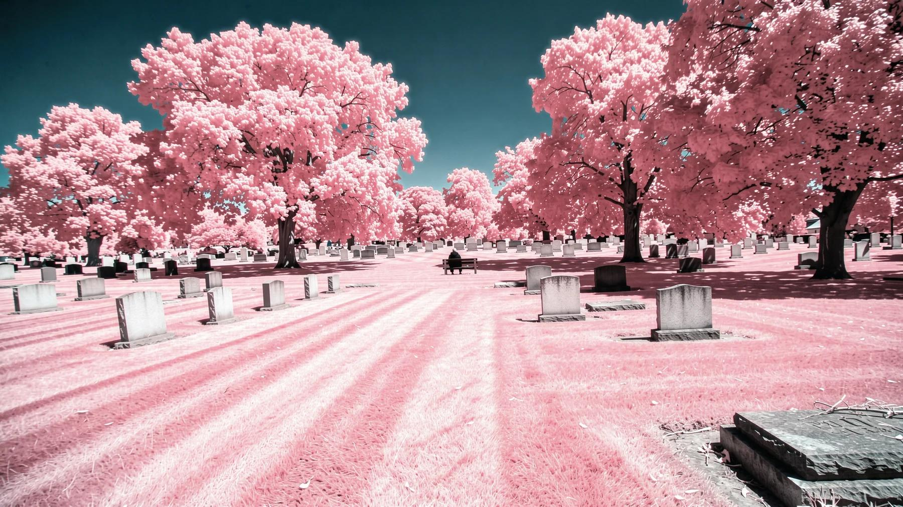
A cemetery on colour infrared film at midday: foliage and grass glow candy pink, the sky turns deep cyan, and pale headstones stay neutral. A lone figure in a dark coat sits on a bench, facing away. Grainy and dreamlike.A crowded pink-tiled public pool seen from above, dozens of swimmers in red, gre
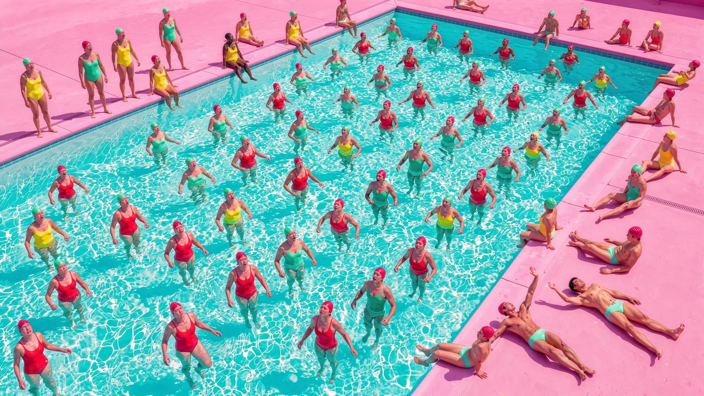
A crowded public pool on a hot day, photographed from a high platform: eighty swimmers, each individually posed, arranged like a painting. In the lower left, one woman stares up at the camera with unexplained dread. Hyper-saturated candy colour, hard sunlight.A green-tiled 1970s pedestrian underpass where a model in a silver sequin gown a
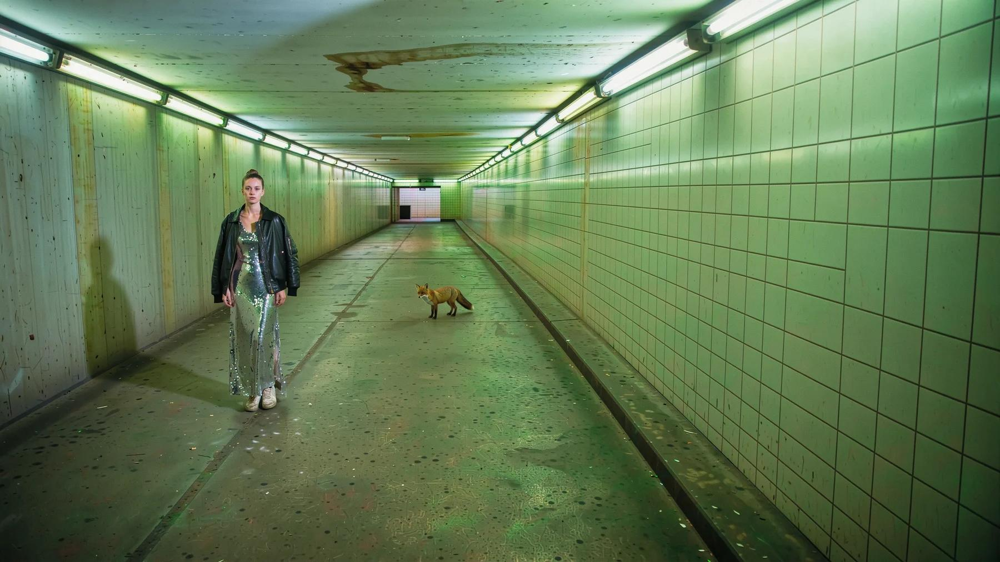
A 1970s pedestrian underpass with a strong central vanishing point. A model in a silver sequin gown and oversized leather bomber stands against the left wall; at the far end, a fox looks back at her. Cold green strip lighting, 28mm, deadpan and cinematic.A high-speed flash photograph of a plum bursting open as a pebble strikes it, ju
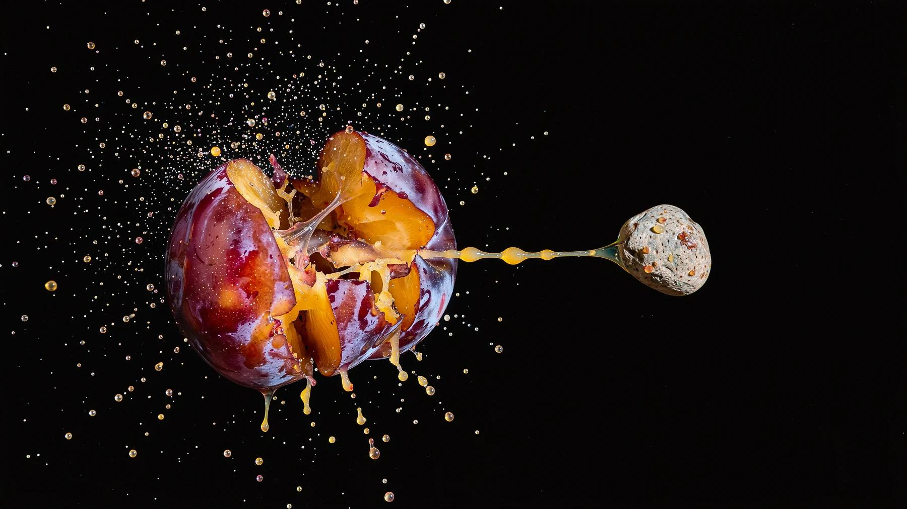
A high-speed flash photograph against pure black: a ripe plum split open by a thrown pebble, a crown of sharp juice droplets suspended around it. Deep purple and gold, extreme macro detail.A lone American bison walking past a steaming river in a misty geothermal landsc
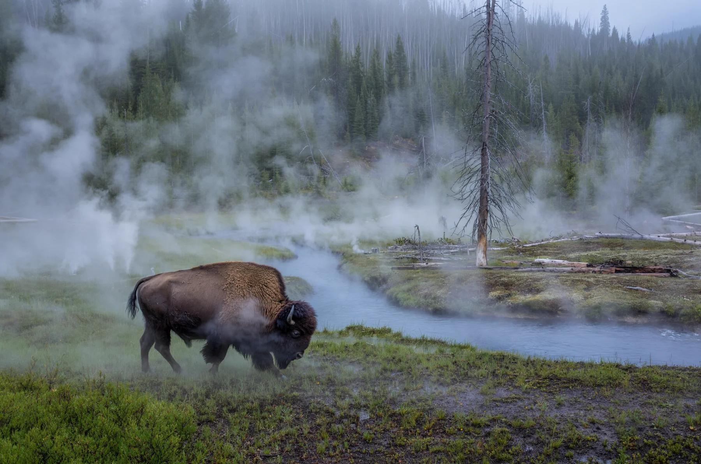
官方 prompt（英文原文，316 字）
A wide-angle photograph of a lone American bison walking through a misty geothermal landscape. The dark brown bison stands in profile at the lower left, half hidden by white steam. A slate-blue stream winds past a tall dead tree, with evergreens fading into the mist behind. Muted, cool palette, soft overcast light.A pink salt flat cracked into hexagonal plates, with three flamingos in shallow
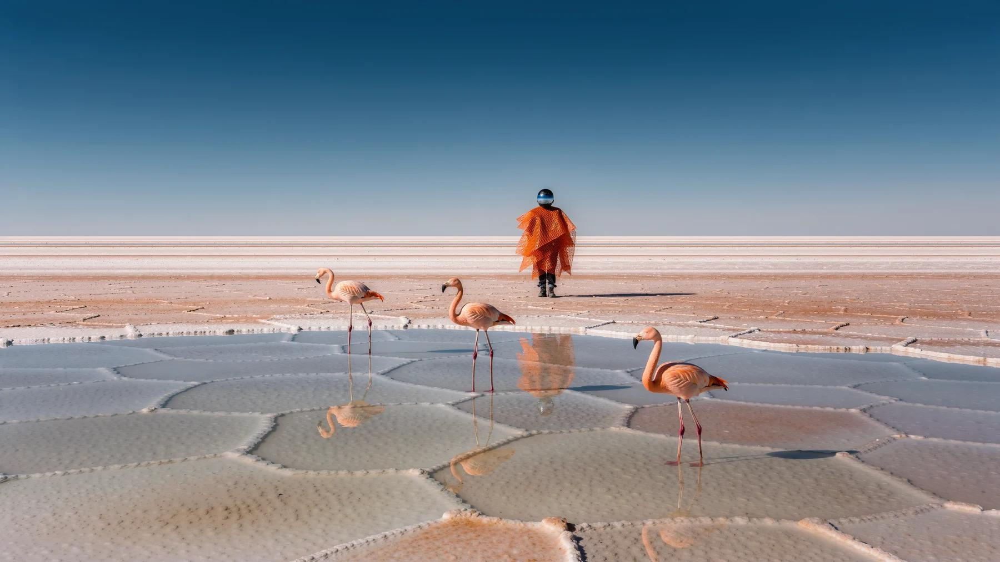
A vast pink salt flat at low sun, cracked into hexagonal plates. Far out stands a figure in a glowing orange mesh coat and mirrored helmet, with three flamingos reflected in the water. Palette: burnt orange (#FF6B35), peach (#F7C59F), cream (#EFEFD0), and deep blue (#004E89).A Schlieren photograph of a person in silhouette exhaling, the breath visible as
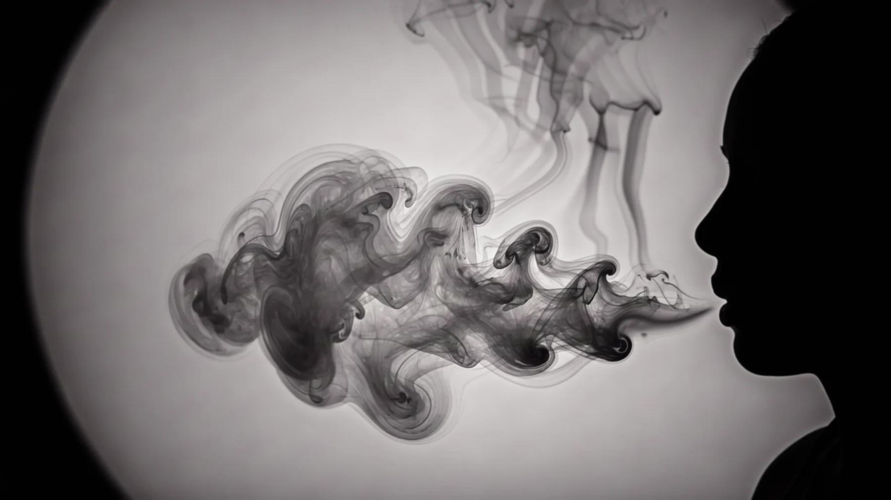
A Schlieren photograph that makes air visible: a dark silhouette in profile at the right, exhaling. The breath spreads left as turbulent silvery grey plumes and curling vortices against a featureless grey disc of light.A solargraph of an industrial harbour in faded browns and mauves, with dozens of
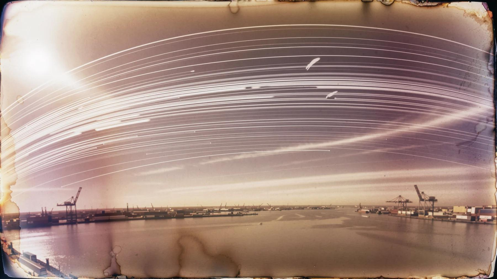
A six-month solargraph from a pinhole camera: an industrial harbour in soft inverted browns and mauves. More than a hundred white sun trails arc across the sky, with ghostly cranes, light leaks, and chemical stains.A split over-under shot of a swimmer in a black cap mid-stroke in dark green lak
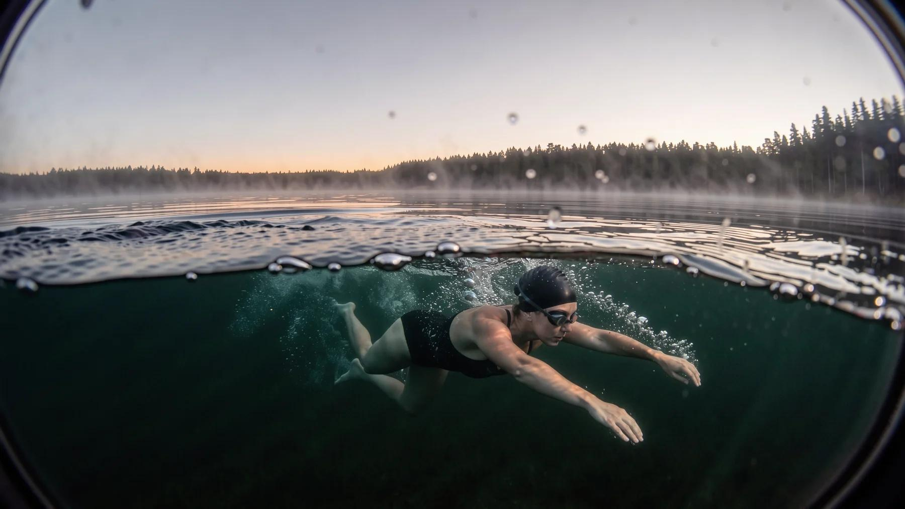
A split-level photograph from a half-submerged dome port in a cold lake at dawn. Below, a swimmer in a black cap hangs mid-stroke in dark green water; above, mist, a pine shoreline, and a pale orange sunrise.Ballet dancers in white tutus performing Swan Lake on a spotlit stage, seen from
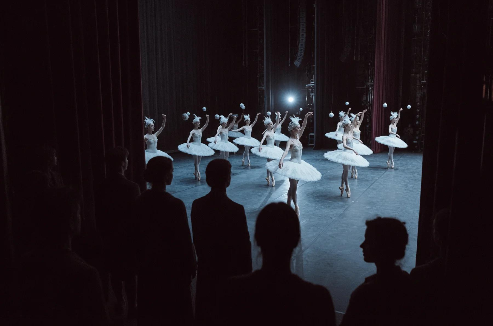
官方 prompt（英文原文，344 字）
A candid photograph from the wings of a theater, looking out at ballet dancers performing Swan Lake. Dark, blurred onlookers fill the foreground; on stage, ballerinas in white tutus are caught mid-motion under a strong central spotlight. Deep blacks, shadowy purples, and stark white. Grainy mid-20th-century color film, shallow depth of field.A blue ballpoint pen drawing of a sailing ship built from leaves on rolling waves.
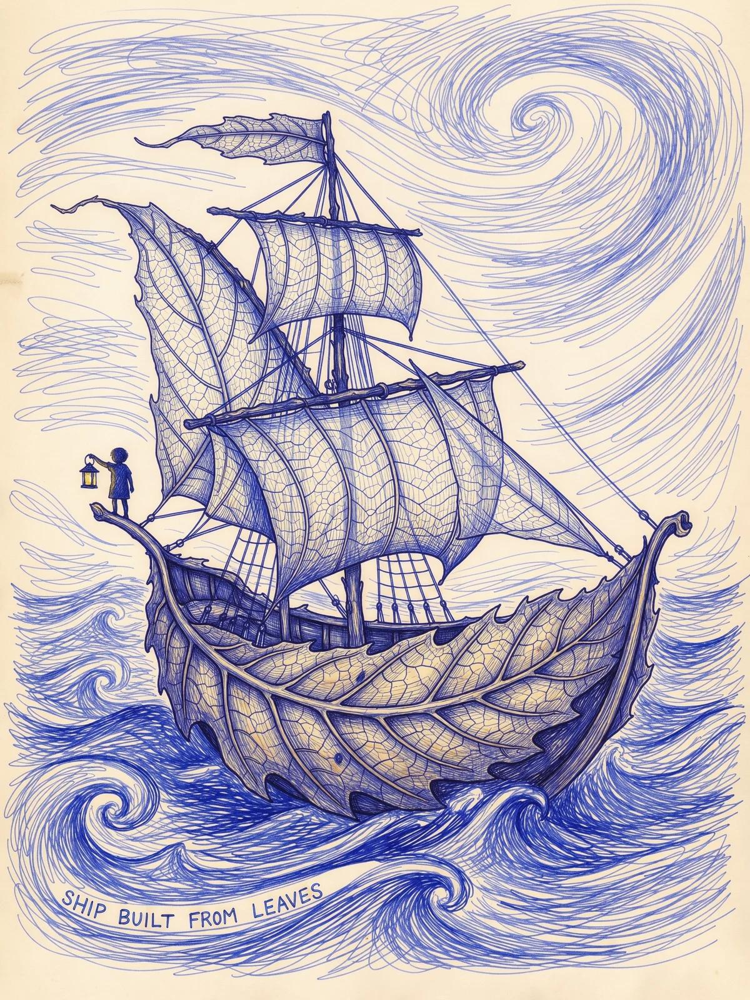
官方 prompt（英文原文，1223 字）
Create a finished 3:4 original artwork.
MEDIUM AND VISUAL LANGUAGE: Obsessively detailed blue ballpoint drawing on pale paper, crosshatched shadows, scribbled energy and extreme fine-line density. Remain faithful to this specific medium, including its physical marks, lighting and limitations.
SUBJECT AND STORY: ship built from leaves. Invent the details from scratch and make the scene emotionally engaging and visually surprising.
COMPOSITION: A quiet asymmetric tableau balancing two different scales with a memorable silhouette.
Integrate only the exact small title "SHIP BUILT FROM LEAVES" using lettering appropriate to this medium; image remains dominant.
Art direction: develop a coherent distinctive palette within this medium; use thoughtful contrast, beautifully observed texture and a memorable visual hierarchy. This must feel like a complete artwork, not a moodboard, not a sample grid and not a generic centered object poster. Fill the frame with the artwork. No decorative presentation border. Invent all characters and settings. Do not reproduce existing artworks, brands, mascots, recognizable franchise characters, signatures or campaigns. No reference image is supplied. No watermarks or web addresses.A busy street at night lined with bright Japanese signs and crowds of shoppers.
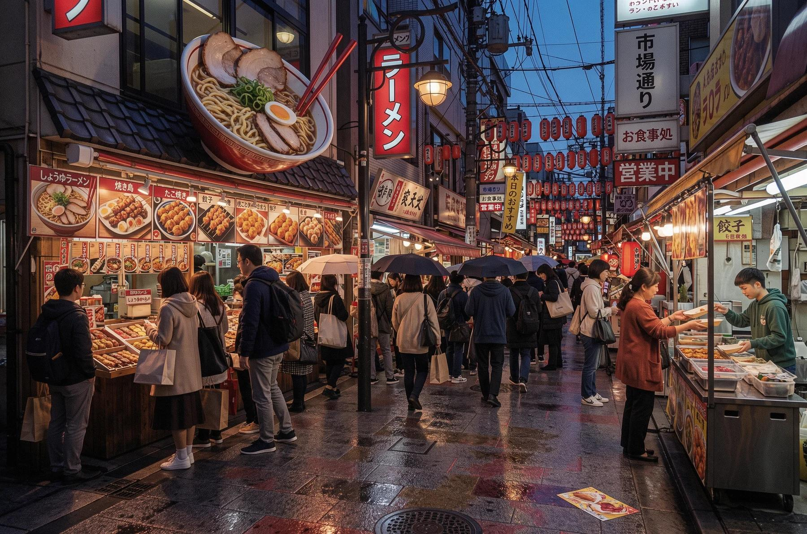
官方 prompt（英文原文，421 字）
A bustling urban street scene filled with bright, colorful signs in Japanese, featuring numerous people engaged in shopping and walking. The atmosphere is lively, with illuminated storefronts and a prominent lamp post casting a warm glow. A giant ramen sign and various food images contribute to the vibrant street market vibe. The setting captures a typical busy street market scene, likely in Japan, during the evening.A calm autumn lake with golden trees reflected in the water and a wooden rowboat at the shore.
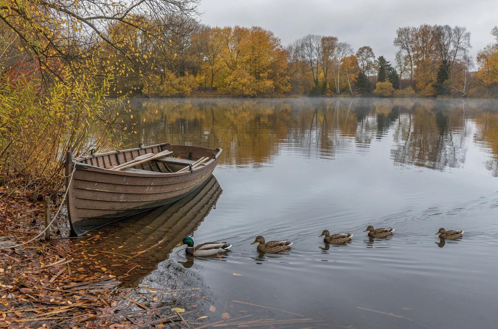
官方 prompt（英文原文，424 字）
A tranquil autumn scene featuring a serene lake surrounded by vibrant, golden-hued trees reflecting in the calm water. In the foreground, a wooden rowboat gently rocks near the shore, and a family of ducks glides gracefully across the surface. The sky is overcast, casting a soft, diffused light that enhances the rich colors of the foliage. The air is crisp and cool, suggesting the peaceful transition from fall to winter.A chalk drawing of a long, colorful dragon stretching across a street.
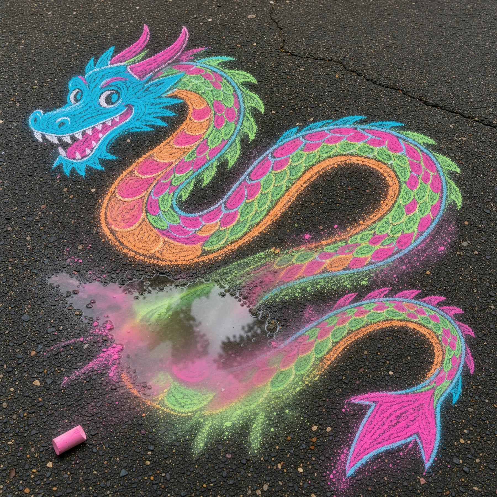
官方 prompt（英文原文，1176 字）
Create a finished 1:1 original artwork.
MEDIUM AND VISUAL LANGUAGE: Vivid chalk pastel on rough dark pavement, powdery broken edges, overhead composition, playful handmade immediacy. Remain faithful to this specific medium, including its physical marks, lighting and limitations.
SUBJECT AND STORY: street-length dragon. Invent the details from scratch and make the scene emotionally engaging and visually surprising.
COMPOSITION: A formally composed frontal view with rhythmic repetition and one surprising interruption.
This is a purely visual artwork. Do not include any text, lettering, captions, logos or words.
Art direction: develop a coherent distinctive palette within this medium; use thoughtful contrast, beautifully observed texture and a memorable visual hierarchy. This must feel like a complete artwork, not a moodboard, not a sample grid and not a generic centered object poster. Fill the frame with the artwork. No decorative presentation border. Invent all characters and settings. Do not reproduce existing artworks, brands, mascots, recognizable franchise characters, signatures or campaigns. No reference image is supplied. No watermarks or web addresses.A community program poster reading Night Window Notes, with a blue window grid and red type.
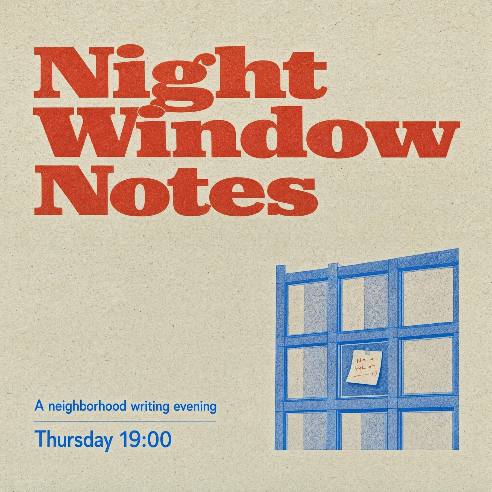
官方 prompt（英文原文，1233 字）
Create a finished 1:1 graphic design artwork for an original fictional design study.
ART DIRECTION: Invented community program poster: practical information paired with a playful custom illustration, sophisticated modular spacing without generic cards. Tomato, sky blue and natural paper. No actual organization identities.
ORIGINAL VISUAL: a grid of glowing windows with one handwritten paper square. Balance a small isolated subject against very large type.
EXACT VISIBLE TITLE: "Night Window Notes"
EXACT SUPPORTING COPY: "A neighborhood writing evening / Thursday 19:00"
Use the supporting copy as a carefully typeset secondary block; slashes indicate line breaks.
Create a coherent, distinctive new layout with readable text and intentional hierarchy. Full-bleed artwork, except for the requested packaging presentation. Keep important text at least 5 percent from all edges. Fine print texture and polished professional art direction. Use only the supplied visible copy. No real brands, logos, named artists, existing book covers, famous characters, copied campaign slogans, signatures, watermarks, QR codes or borrowed artwork. Invent all visual forms from this description; this is not a remake of a specific existing design.A cross-section of a copper kettle as a tiny concert hall, titled The Orchestra Inside a Kettle.
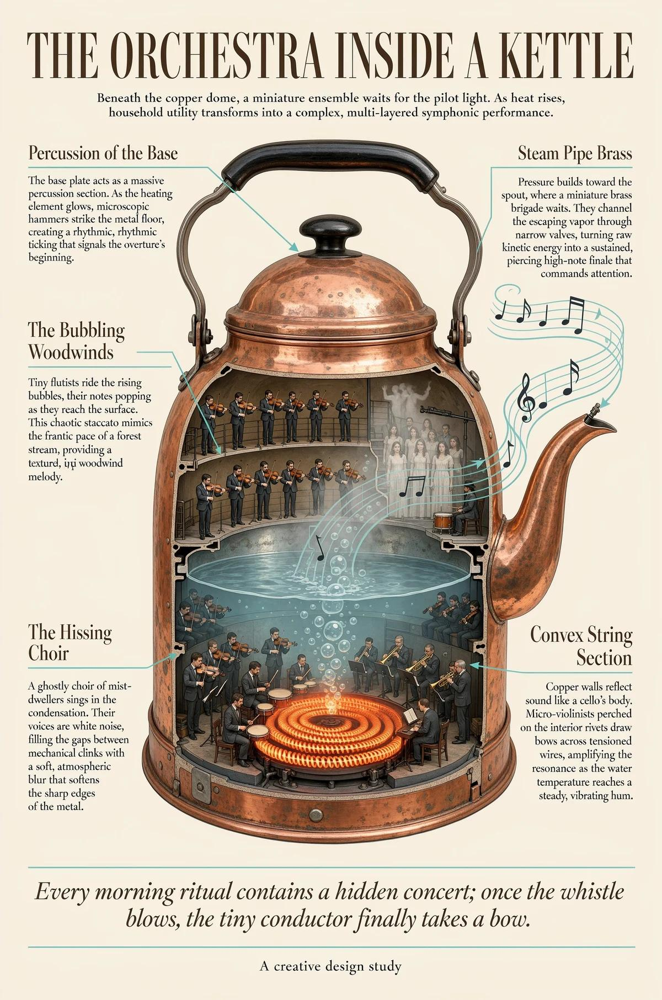
官方 prompt（英文原文，3565 字）
Create a finished 2:3 long-form infographic poster. This is a TEXT-RICH graphic design study. Give the artwork a memorable composition specific to its concept, with roughly half the area for legible longer text. Integrate the prose into the authored visual arrangement; do not default to repeated cards or a generic five-panel grid.
ART DIRECTION: Cutaway copper kettle with miniature instruments and steam shaped as music staffs; cream ground, turquoise arrows, classic concert-program typography and long captions.
VISUAL SUBJECT: A detailed cross-section of a vintage copper kettle reveals a multi-tiered concert hall. Tiny figures with violins occupy the curved walls, while percussionists stand on the heating coil. Turquoise arrows trace the path of steam as it twists into musical staves, connecting the internal instruments to the whistling spout against a calm cream background.
SOURCE BRIEF FOR DIAGRAM CONTENT: An ordinary kettle becomes a tiny fictional orchestra whose parts contribute different textures.
EXACT VISIBLE COPY, reproduce every sentence verbatim with correct spelling and punctuation. The headings below describe layout roles and are not extra printed words.
TITLE: "THE ORCHESTRA INSIDE A KETTLE"
INTRODUCTION: "Beneath the copper dome, a miniature ensemble waits for the pilot light. As heat rises, household utility transforms into a complex, multi-layered symphonic performance."
SECTION 1 HEADING: "Percussion of the Base"
SECTION 1 BODY: "The base plate acts as a massive percussion section. As the heating element glows, microscopic hammers strike the metal floor, creating a rhythmic, rhythmic ticking that signals the overtureâs beginning."
SECTION 2 HEADING: "The Bubbling Woodwinds"
SECTION 2 BODY: "Tiny flutists ride the rising bubbles, their notes popping as they reach the surface. This chaotic staccato mimics the frantic pace of a forest stream, providing a textured, liquid woodwind melody."
SECTION 3 HEADING: "Convex String Section"
SECTION 3 BODY: "Copper walls reflect sound like a celloâs body. Micro-violinists perched on the interior rivets draw bows across tensioned wires, amplifying the resonance as the water temperature reaches a steady, vibrating hum."
SECTION 4 HEADING: "Steam Pipe Brass"
SECTION 4 BODY: "Pressure builds toward the spout, where a miniature brass brigade waits. They channel the escaping vapor through narrow valves, turning raw kinetic energy into a sustained, piercing high-note finale that commands attention."
SECTION 5 HEADING: "The Hissing Choir"
SECTION 5 BODY: "A ghostly choir of mist-dwellers sings in the condensation. Their voices are white noise, filling the gaps between mechanical clinks with a soft, atmospheric blur that softens the sharp edges of the metal."
BOTTOM TAKEAWAY: "Every morning ritual contains a hidden concert; once the whistle blows, the tiny conductor finally takes a bow."
FOOTER: "A creative design study"
TYPESETTING: The 220 words of supplied prose are essential visual content, not instructions to summarize. Set complete paragraphs in comfortably readable body type, roughly 26â32 pixels at a 2K long edge. Short line lengths, generous leading and at least 5 percent exterior margins. Headings clearly larger than body text. Keep all 5 sections, introduction and takeaway fully visible. Add only the supplied diagram labels where needed. Avoid duplicate paragraphs, invented filler, ellipses, illegible pseudo-text or cut-off sentences. Keep diagram lines away from prose. A polished flat artwork filling the whole image, not a framed mockup.A flat illustration of two people having a late summer picnic on a checkered blanket.
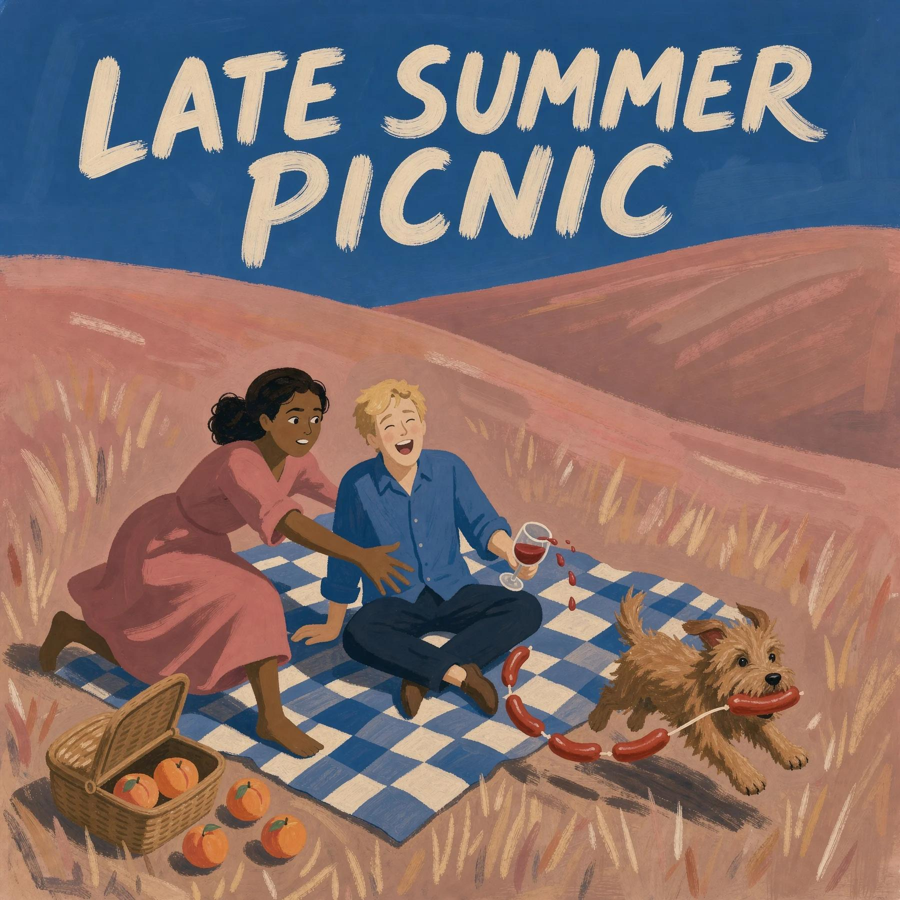
官方 prompt（英文原文，1284 字）
Create a finished 1:1 original artwork.
MEDIUM AND VISUAL LANGUAGE: Opaque matte gouache illustration, visible broad brushwork, simplified intimate everyday scenes, dusty rose and cobalt. Remain faithful to this specific medium, including its physical marks, lighting and limitations.
SUBJECT AND STORY: late summer picnic. Invent the details from scratch and make the scene emotionally engaging and visually surprising.
COMPOSITION: A dense story-rich scene with several interacting elements, all subordinate to one unmistakable focal point.
Create an original illustrated cover with the exact title "LATE SUMMER PICNIC"; lettering belongs organically to the visual world, never a generic heading pasted over a stock image.
Art direction: develop a coherent distinctive palette within this medium; use thoughtful contrast, beautifully observed texture and a memorable visual hierarchy. This must feel like a complete artwork, not a moodboard, not a sample grid and not a generic centered object poster. Fill the frame with the artwork. No decorative presentation border. Invent all characters and settings. Do not reproduce existing artworks, brands, mascots, recognizable franchise characters, signatures or campaigns. No reference image is supplied. No watermarks or web addresses.A hot pink technical schematic on black titled The Blueprint of a Paper Crown, with an exploded crown.
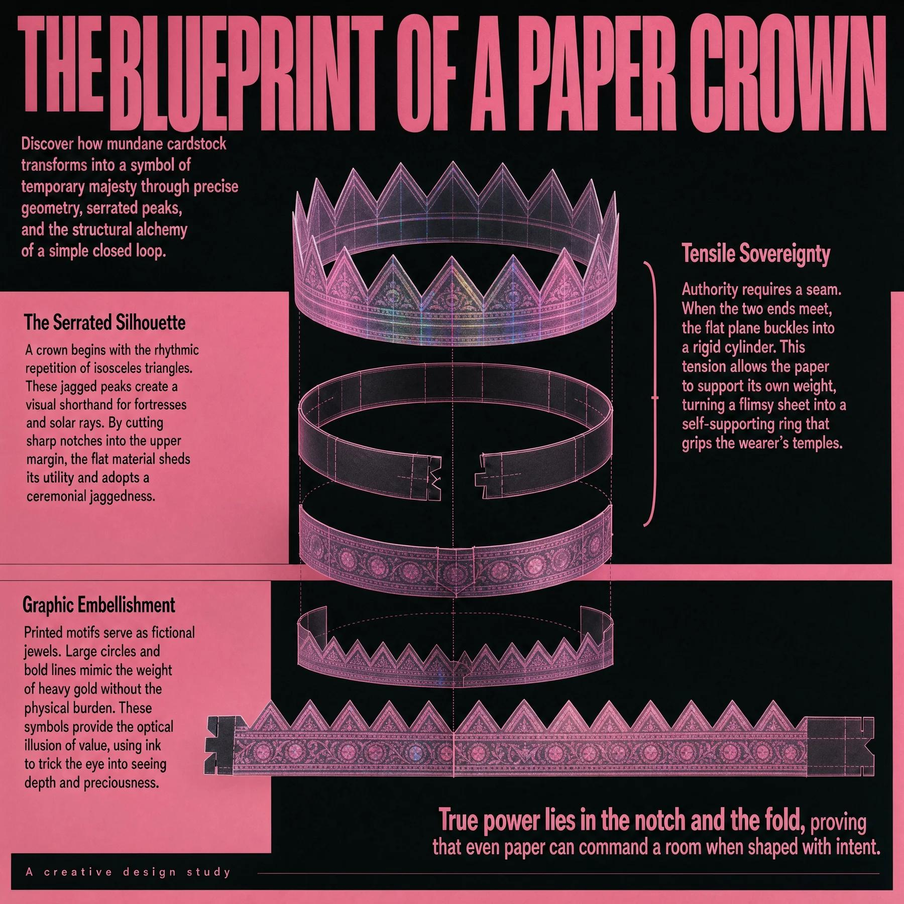
官方 prompt（英文原文，3455 字）
Create a finished 1:1 long-form infographic poster. This is a TEXT-RICH graphic design study. Give the artwork a memorable composition specific to its concept, with roughly half the area for legible longer text. Integrate the prose into the authored visual arrangement; do not default to repeated cards or a generic five-panel grid.
ART DIRECTION: Experimental contemporary typography, black and hot pink, mixed large and small scales with highly legible prose. Invent a bespoke central diagram specifically for this concept: the blueprint of a paper crown. Shape the composition around the relationships in the brief, not a reusable card grid. The prose should occupy clear uncluttered areas alongside the diagram. Keep a strong reading sequence, large body text and no text over detailed illustration.
VISUAL SUBJECT: A technical schematic rendered in hot pink against a black void. A deconstructed crown appears as a flat, unrolled strip at the bottom, while a central exploded view shows the three-dimensional assembly. Dotted lines trace the arc of the seam, connecting the flat notches to a floating, holographic circular crown hovering in the upper center.
SOURCE BRIEF FOR DIAGRAM CONTENT: Explore how flat printed symbols become theatrical authority through notches, a circular seam, height and repeated motifs.
EXACT VISIBLE COPY, reproduce every sentence verbatim with correct spelling and punctuation. The headings below describe layout roles and are not extra printed words.
TITLE: "THE BLUEPRINT OF A PAPER CROWN"
INTRODUCTION: "Discover how mundane cardstock transforms into a symbol of temporary majesty through precise geometry, serrated peaks, and the structural alchemy of a simple closed loop."
SECTION 1 HEADING: "The Serrated Silhouette"
SECTION 1 BODY: "A crown begins with the rhythmic repetition of isosceles triangles. These jagged peaks create a visual shorthand for fortresses and solar rays. By cutting sharp notches into the upper margin, the flat material sheds its utility and adopts a ceremonial jaggedness."
SECTION 2 HEADING: "Tensile Sovereignty"
SECTION 2 BODY: "Authority requires a seam. When the two ends meet, the flat plane buckles into a rigid cylinder. This tension allows the paper to support its own weight, turning a flimsy sheet into a self-supporting ring that grips the wearerâs temples."
SECTION 3 HEADING: "Graphic Embellishment"
SECTION 3 BODY: "Printed motifs serve as fictional jewels. Large circles and bold lines mimic the weight of heavy gold without the physical burden. These symbols provide the optical illusion of value, using ink to trick the eye into seeing depth and preciousness."
BOTTOM TAKEAWAY: "True power lies in the notch and the fold, proving that even paper can command a room when shaped with intent."
FOOTER: "A creative design study"
TYPESETTING: The 180 words of supplied prose are essential visual content, not instructions to summarize. Set complete paragraphs in comfortably readable body type, roughly 30â36 pixels at a 2K long edge. Short line lengths, generous leading and at least 5 percent exterior margins. Headings clearly larger than body text. Keep all 3 sections, introduction and takeaway fully visible. Add only the supplied diagram labels where needed. Avoid duplicate paragraphs, invented filler, ellipses, illegible pseudo-text or cut-off sentences. Keep diagram lines away from prose. A polished flat artwork filling the whole image, not a framed mockup.A knitted wool landscape where a river made of a striped scarf winds between hills.
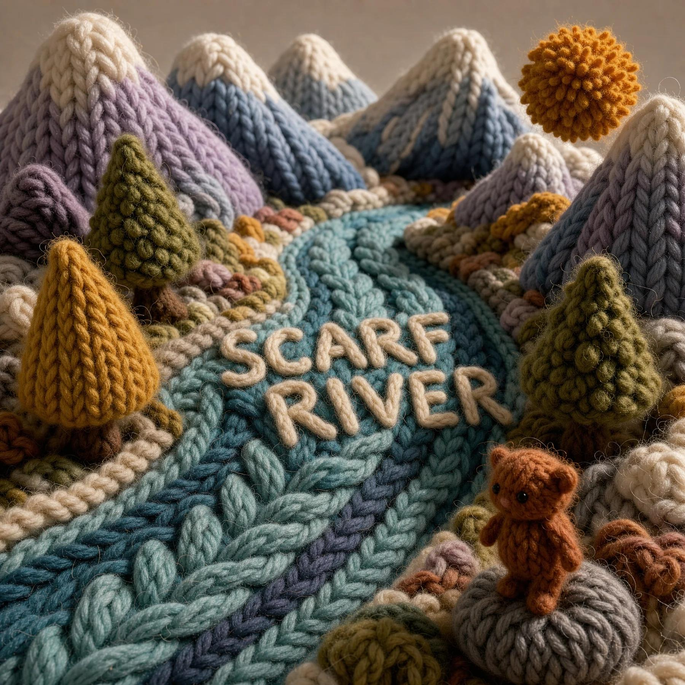
官方 prompt（英文原文，1240 字）
Create a finished 1:1 original artwork.
MEDIUM AND VISUAL LANGUAGE: Chunky knitted soft sculpture scene, cable stitches and looped yarn, cozy imperfect forms, low winter light. Remain faithful to this specific medium, including its physical marks, lighting and limitations.
SUBJECT AND STORY: scarf river. Invent the details from scratch and make the scene emotionally engaging and visually surprising.
COMPOSITION: A winding visual path that leads through three spatial layers and returns to the subject.
Create an original illustrated cover with the exact title "SCARF RIVER"; lettering belongs organically to the visual world, never a generic heading pasted over a stock image.
Art direction: develop a coherent distinctive palette within this medium; use thoughtful contrast, beautifully observed texture and a memorable visual hierarchy. This must feel like a complete artwork, not a moodboard, not a sample grid and not a generic centered object poster. Fill the frame with the artwork. No decorative presentation border. Invent all characters and settings. Do not reproduce existing artworks, brands, mascots, recognizable franchise characters, signatures or campaigns. No reference image is supplied. No watermarks or web addresses.A music event poster with large green type reading Open Air Register on deep blue.
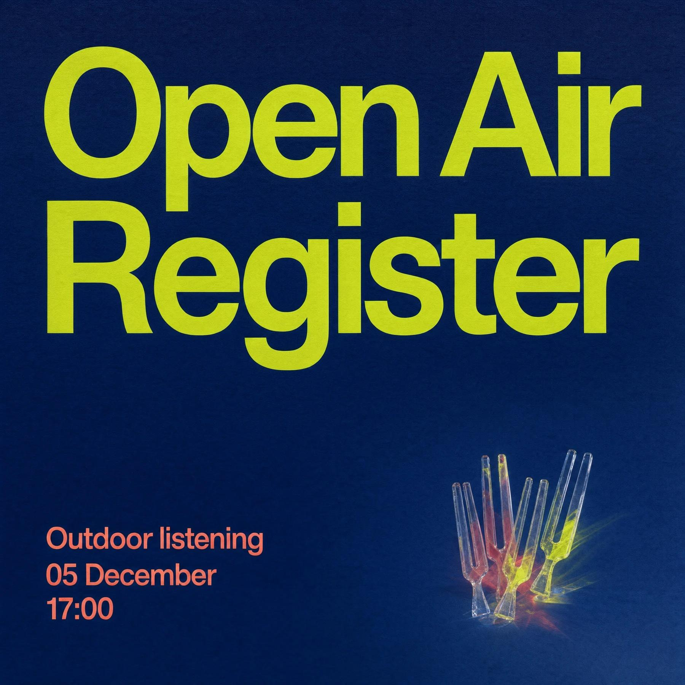
官方 prompt（英文原文，1191 字）
Create a finished 1:1 graphic design artwork for an original fictional design study.
ART DIRECTION: Experimental music event poster: expressive typography with highly legible event details, luminous abstract forms, punchy spot colors, deliberate off-center rhythm. Midnight blue, coral and acid yellow.
ORIGINAL VISUAL: a cluster of translucent tuning-fork sculptures. Balance a small isolated subject against very large type.
EXACT VISIBLE TITLE: "Open Air Register"
EXACT SUPPORTING COPY: "Outdoor listening / 05 December / 17:00"
Use the supporting copy as a carefully typeset secondary block; slashes indicate line breaks.
Create a coherent, distinctive new layout with readable text and intentional hierarchy. Full-bleed artwork, except for the requested packaging presentation. Keep important text at least 5 percent from all edges. Fine print texture and polished professional art direction. Use only the supplied visible copy. No real brands, logos, named artists, existing book covers, famous characters, copied campaign slogans, signatures, watermarks, QR codes or borrowed artwork. Invent all visual forms from this description; this is not a remake of a specific existing design.A needle-felted wool miniature of a badger running a bakery inside a tree stump.
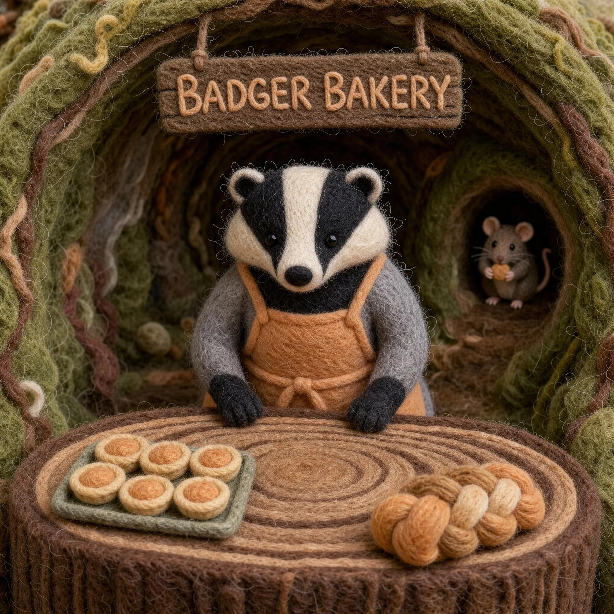
官方 prompt（英文原文，1293 字）
Create a finished 1:1 original artwork.
MEDIUM AND VISUAL LANGUAGE: Hand-needlefelted wool miniature illustration, visible fibers, soft overcast light, moss green and warm peach, no glossy surfaces. Remain faithful to this specific medium, including its physical marks, lighting and limitations.
SUBJECT AND STORY: badger bakery. Invent the details from scratch and make the scene emotionally engaging and visually surprising.
COMPOSITION: An expansive environmental scene with foreground, middle distance and a tiny unexpected discovery in the background.
Create an original illustrated cover with the exact title "BADGER BAKERY"; lettering belongs organically to the visual world, never a generic heading pasted over a stock image.
Art direction: develop a coherent distinctive palette within this medium; use thoughtful contrast, beautifully observed texture and a memorable visual hierarchy. This must feel like a complete artwork, not a moodboard, not a sample grid and not a generic centered object poster. Fill the frame with the artwork. No decorative presentation border. Invent all characters and settings. Do not reproduce existing artworks, brands, mascots, recognizable franchise characters, signatures or campaigns. No reference image is supplied. No watermarks or web addresses.A pixel art illustration of an arctic seed vault under the northern lights.
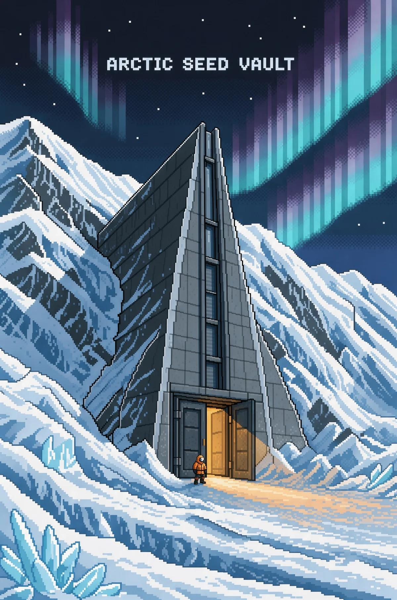
官方 prompt（英文原文，1221 字）
Create a finished 2:3 original artwork.
MEDIUM AND VISUAL LANGUAGE: Strict pixel-art illustration with visible square pixels and limited 16-color palette, no blur, rich environmental storytelling. Remain faithful to this specific medium, including its physical marks, lighting and limitations.
SUBJECT AND STORY: arctic seed vault. Invent the details from scratch and make the scene emotionally engaging and visually surprising.
COMPOSITION: A low viewpoint that makes the main subject monumental, with a tiny detail establishing scale.
Integrate only the exact small title "ARCTIC SEED VAULT" using lettering appropriate to this medium; image remains dominant.
Art direction: develop a coherent distinctive palette within this medium; use thoughtful contrast, beautifully observed texture and a memorable visual hierarchy. This must feel like a complete artwork, not a moodboard, not a sample grid and not a generic centered object poster. Fill the frame with the artwork. No decorative presentation border. Invent all characters and settings. Do not reproduce existing artworks, brands, mascots, recognizable franchise characters, signatures or campaigns. No reference image is supplied. No watermarks or web addresses.A poster with large stacked red type reading Start Somewhere Soft on a warm cream background.
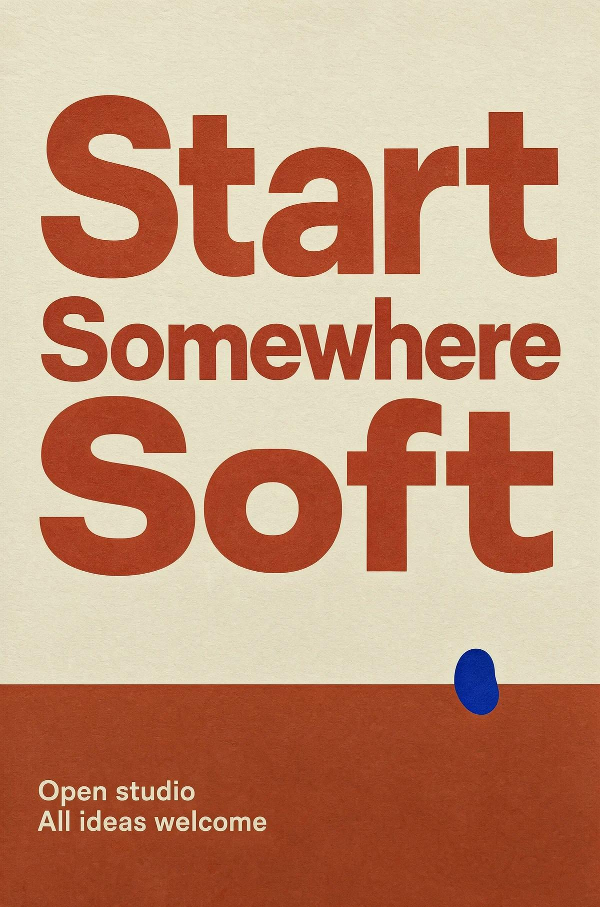
官方 prompt（英文原文，1205 字）
Create a finished 2:3 graphic design artwork for an original fictional design study.
ART DIRECTION: Type-led graphic poster with a newly composed layout and striking scale contrasts. Typography is the visual subject; use only supplied copy. Crisp ink, subtle paper grain, two strong colors with a neutral ground.
ORIGINAL VISUAL: rounded title lettering on a sharply divided color field. Balance a small isolated subject against very large type.
EXACT VISIBLE TITLE: "Start Somewhere Soft"
EXACT SUPPORTING COPY: "Open studio / All ideas welcome"
Use the supporting copy as a carefully typeset secondary block; slashes indicate line breaks.
Create a coherent, distinctive new layout with readable text and intentional hierarchy. Full-bleed artwork, except for the requested packaging presentation. Keep important text at least 5 percent from all edges. Fine print texture and polished professional art direction. Use only the supplied visible copy. No real brands, logos, named artists, existing book covers, famous characters, copied campaign slogans, signatures, watermarks, QR codes or borrowed artwork. Invent all visual forms from this description; this is not a remake of a specific existing design.A scratchboard illustration of a porcupine looking through a brass telescope at night.
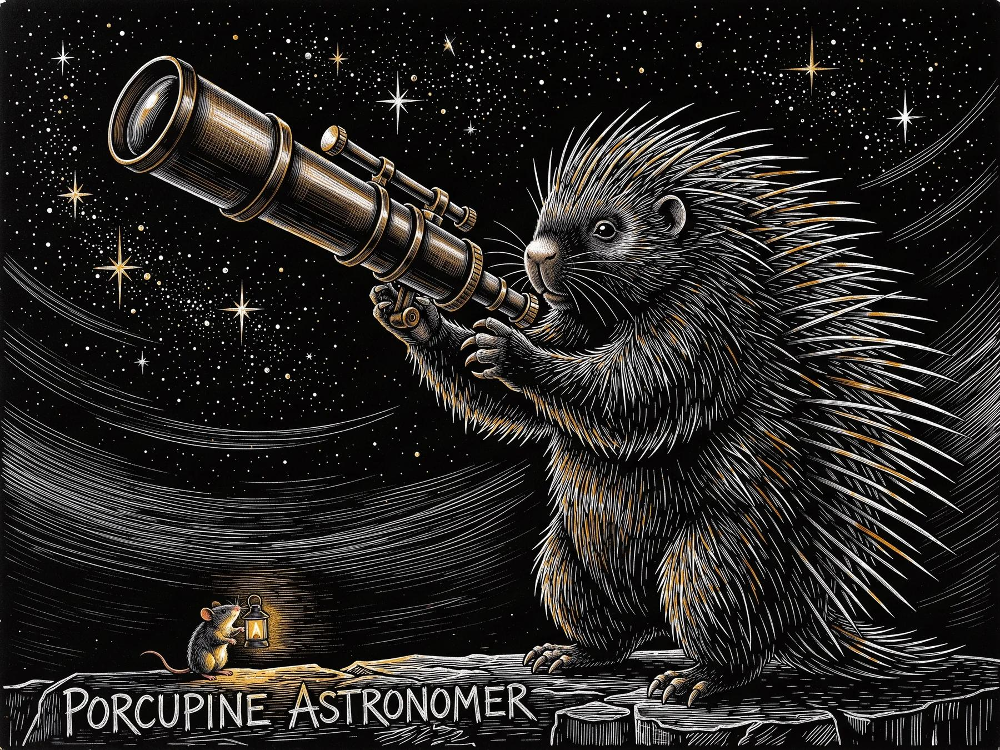
官方 prompt（英文原文，1213 字）
Create a finished 4:3 original artwork.
MEDIUM AND VISUAL LANGUAGE: Hand-scratched white lines on solid black board, dense crosshatching, tiny warm amber accents, fierce chiaroscuro. Remain faithful to this specific medium, including its physical marks, lighting and limitations.
SUBJECT AND STORY: porcupine astronomer. Invent the details from scratch and make the scene emotionally engaging and visually surprising.
COMPOSITION: A low viewpoint that makes the main subject monumental, with a tiny detail establishing scale.
Integrate only the exact small title "PORCUPINE ASTRONOMER" using lettering appropriate to this medium; image remains dominant.
Art direction: develop a coherent distinctive palette within this medium; use thoughtful contrast, beautifully observed texture and a memorable visual hierarchy. This must feel like a complete artwork, not a moodboard, not a sample grid and not a generic centered object poster. Fill the frame with the artwork. No decorative presentation border. Invent all characters and settings. Do not reproduce existing artworks, brands, mascots, recognizable franchise characters, signatures or campaigns. No reference image is supplied. No watermarks or web addresses.A snow-capped mountain range glowing orange and pink at sunset under soft clouds.
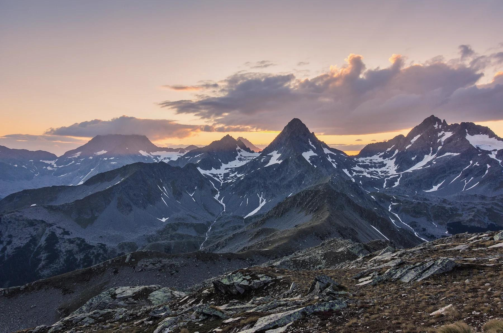
A breathtaking mountain range bathed in the warm glow of a sunset. The peaks, partially covered in snow, reflect hues of orange and pink. Fluffy clouds hover above, blending into a sky that transitions from golden to soft blue.A stained glass illustration of a fox sitting beneath a solar eclipse.
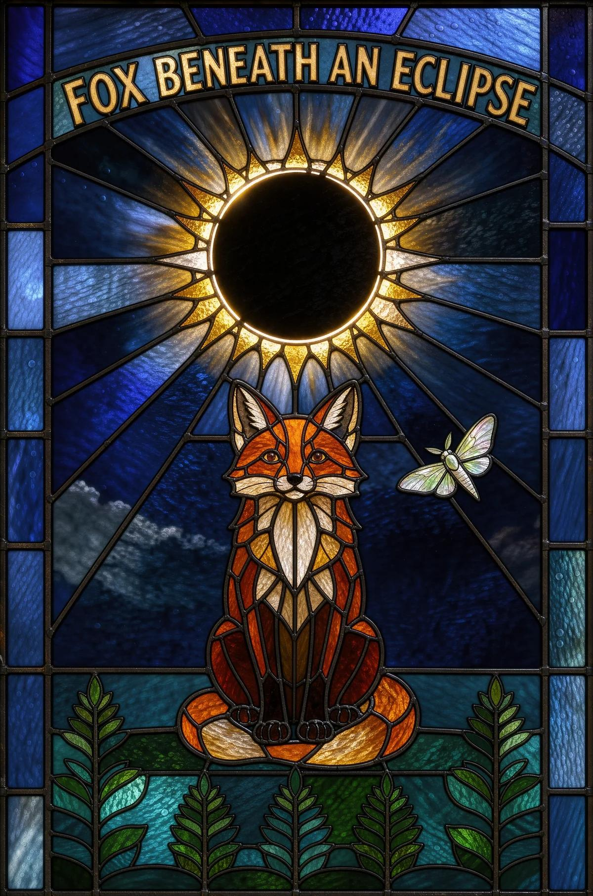
官方 prompt（英文原文，1297 字）
Create a finished 2:3 original artwork.
MEDIUM AND VISUAL LANGUAGE: Luminous stained-glass illustration with thick irregular lead divisions, jewel-colored panes, backlit bubbles and ancient glass imperfections. Remain faithful to this specific medium, including its physical marks, lighting and limitations.
SUBJECT AND STORY: fox beneath an eclipse. Invent the details from scratch and make the scene emotionally engaging and visually surprising.
COMPOSITION: A formally composed frontal view with rhythmic repetition and one surprising interruption.
Create an original illustrated cover with the exact title "FOX BENEATH AN ECLIPSE"; lettering belongs organically to the visual world, never a generic heading pasted over a stock image.
Art direction: develop a coherent distinctive palette within this medium; use thoughtful contrast, beautifully observed texture and a memorable visual hierarchy. This must feel like a complete artwork, not a moodboard, not a sample grid and not a generic centered object poster. Fill the frame with the artwork. No decorative presentation border. Invent all characters and settings. Do not reproduce existing artworks, brands, mascots, recognizable franchise characters, signatures or campaigns. No reference image is supplied. No watermarks or web addresses.A surreal installation poster reading The Chair Remembers Flight, with colored filters and a chair.
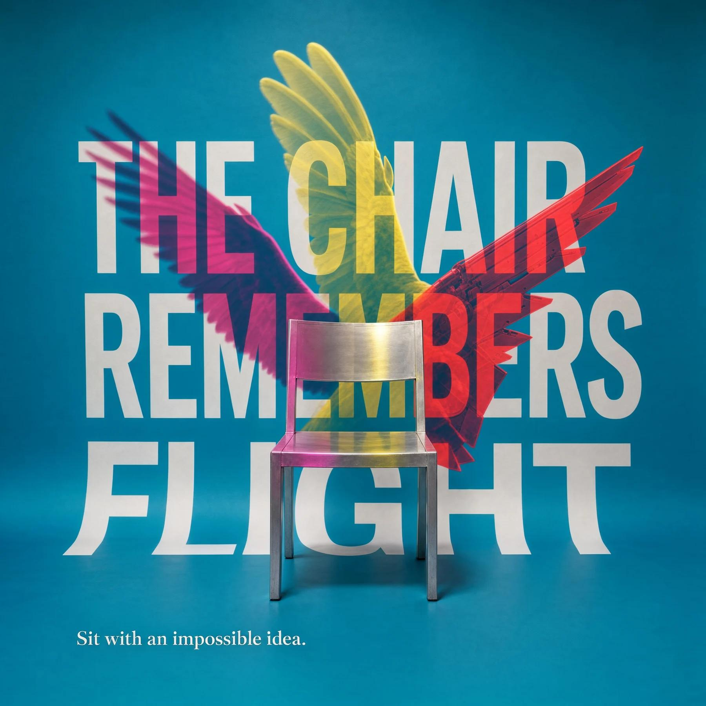
官方 prompt（英文原文，1427 字）
Create a finished 1:1 original experimental graphic design artwork.
DESIGN LANGUAGE: A surreal photographic installation seen through colored filters. Several sharp incompatible shadows tell a second story. Monumental spare title with expansive saturated negative space.
UNIQUE VISUAL IDEA: a bare metal chair whose three colored shadows form separate wing shapes.
COMPOSITION: Make the visual and title physically interact across most of the canvas; use intentional overlap while preserving legibility. Let this specific visual idea determine the layout. Preserve its conceptual surprise.
EXACT TITLE: "THE CHAIR REMEMBERS FLIGHT"
EXACT SECONDARY COPY: "Sit with an impossible idea."
Artwork fills the image; no framed poster mockup and no presentation board.
The title must be confidently typeset and readable. The small supplied sentence is the only supporting copy. No invented filler paragraphs. Type should feel integral to the material, scene or composition, not automatically placed as a generic heading over a small centered object. Design a visually adventurous, professionally resolved piece with clear hierarchy, deliberate contrast and rich details. Use fresh invented imagery and original letter arrangements; do not reproduce any existing poster, brand, logo, artwork, artist signature, campaign, famous character or reference photograph. No reference image is supplied. No watermarks, web addresses or QR codes.A top-down suitcase in cobalt and peach with one exploded layer, titled The Shapes of a Packed Suitcase.
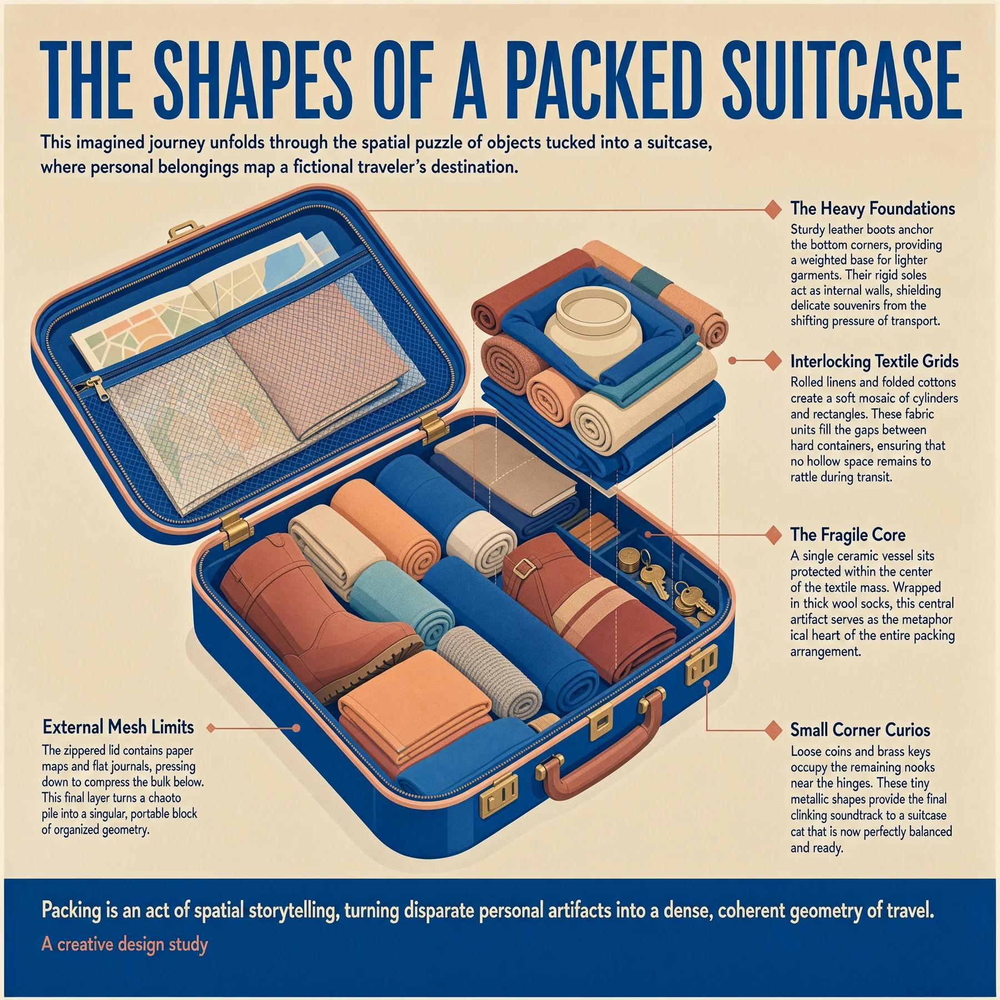
官方 prompt（英文原文，3490 字）
Create a finished 1:1 long-form infographic poster. This is a TEXT-RICH graphic design study. Give the artwork a memorable composition specific to its concept, with roughly half the area for legible longer text. Integrate the prose into the authored visual arrangement; do not default to repeated cards or a generic five-panel grid.
ART DIRECTION: A top-down suitcase uses brightly colored geometric luggage silhouettes, one exploded packing layer, cobalt and peach, four clear editorial commentary fields.
VISUAL SUBJECT: A top-down view shows a suitcase filled with cobalt and peach geometric silhouettes representing clothes and gear. One central layer is exploded upward, revealing how a ceramic jar fits into a nest of rolled fabrics. Four thin lines connect the editorial fields to specific interlocking shapes, highlighting the structural logic of the packed luggage.
SOURCE BRIEF FOR DIAGRAM CONTENT: An imagined journey is told through the spatial puzzle of objects inside a suitcase.
EXACT VISIBLE COPY, reproduce every sentence verbatim with correct spelling and punctuation. The headings below describe layout roles and are not extra printed words.
TITLE: "THE SHAPES OF A PACKED SUITCASE"
INTRODUCTION: "This imagined journey unfolds through the spatial puzzle of objects tucked into a suitcase, where personal belongings map a fictional travelerâs destination."
SECTION 1 HEADING: "The Heavy Foundations"
SECTION 1 BODY: "Sturdy leather boots anchor the bottom corners, providing a weighted base for lighter garments. Their rigid soles act as internal walls, shielding delicate souvenirs from the shifting pressure of transport."
SECTION 2 HEADING: "Interlocking Textile Grids"
SECTION 2 BODY: "Rolled linens and folded cottons create a soft mosaic of cylinders and rectangles. These fabric units fill the gaps between hard containers, ensuring that no hollow space remains to rattle during transit."
SECTION 3 HEADING: "The Fragile Core"
SECTION 3 BODY: "A single ceramic vessel sits protected within the center of the textile mass. Wrapped in thick wool socks, this central artifact serves as the metaphorical heart of the entire packing arrangement."
SECTION 4 HEADING: "External Mesh Limits"
SECTION 4 BODY: "The zippered lid contains paper maps and flat journals, pressing down to compress the bulk below. This final layer turns a chaotic pile into a singular, portable block of organized geometry."
SECTION 5 HEADING: "Small Corner Curios"
SECTION 5 BODY: "Loose coins and brass keys occupy the remaining nooks near the hinges. These tiny metallic shapes provide the final clinking soundtrack to a suitcase that is now perfectly balanced and ready."
BOTTOM TAKEAWAY: "Packing is an act of spatial storytelling, turning disparate personal artifacts into a dense, coherent geometry of travel."
FOOTER: "A creative design study"
TYPESETTING: The 216 words of supplied prose are essential visual content, not instructions to summarize. Set complete paragraphs in comfortably readable body type, roughly 26â32 pixels at a 2K long edge. Short line lengths, generous leading and at least 5 percent exterior margins. Headings clearly larger than body text. Keep all 5 sections, introduction and takeaway fully visible. Add only the supplied diagram labels where needed. Avoid duplicate paragraphs, invented filler, ellipses, illegible pseudo-text or cut-off sentences. Keep diagram lines away from prose. A polished flat artwork filling the whole image, not a framed mockup.A type-led poster reading Room Between Words, with oversized red letterforms and blue accents.
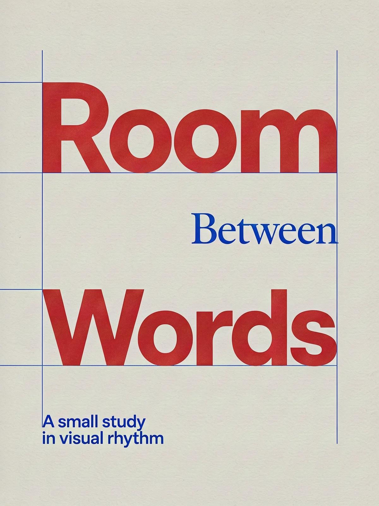
官方 prompt（英文原文，1220 字）
Create a finished 3:4 graphic design artwork for an original fictional design study.
ART DIRECTION: Type-led graphic poster with a newly composed layout and striking scale contrasts. Typography is the visual subject; use only supplied copy. Crisp ink, subtle paper grain, two strong colors with a neutral ground.
ORIGINAL VISUAL: title words at different scales joined by thin rules. Crop the main form boldly at one edge while keeping every word inside the trim.
EXACT VISIBLE TITLE: "Room Between Words"
EXACT SUPPORTING COPY: "A small study in visual rhythm"
Use the supporting copy as a carefully typeset secondary block; slashes indicate line breaks.
Create a coherent, distinctive new layout with readable text and intentional hierarchy. Full-bleed artwork, except for the requested packaging presentation. Keep important text at least 5 percent from all edges. Fine print texture and polished professional art direction. Use only the supplied visible copy. No real brands, logos, named artists, existing book covers, famous characters, copied campaign slogans, signatures, watermarks, QR codes or borrowed artwork. Invent all visual forms from this description; this is not a remake of a specific existing design.A woodcut-style infographic titled The History of an Imaginary Sport, with ochre paths spiraling from a balance beam.
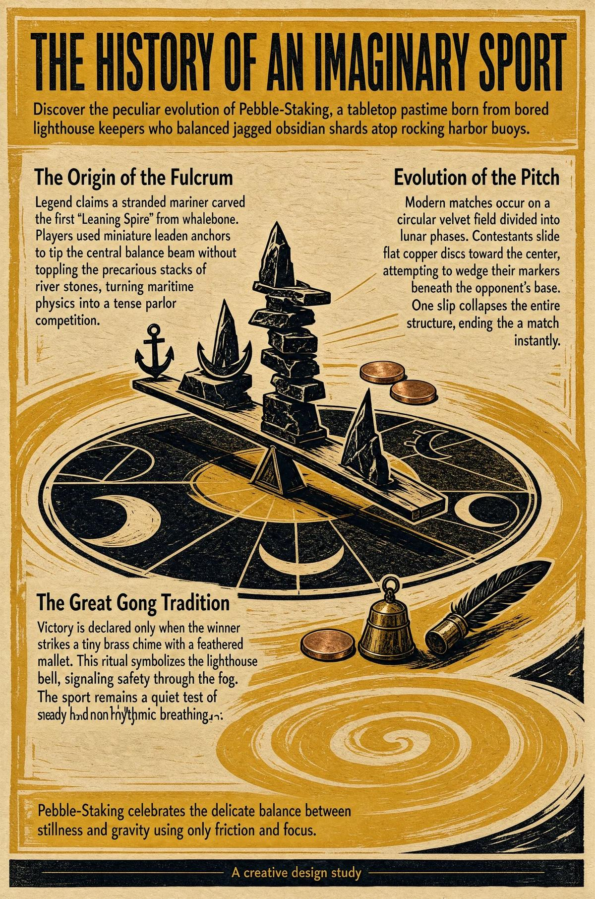
官方 prompt（英文原文，3504 字）
Create a finished 2:3 long-form infographic poster. This is a TEXT-RICH graphic design study. Give the artwork a memorable composition specific to its concept, with roughly half the area for legible longer text. Integrate the prose into the authored visual arrangement; do not default to repeated cards or a generic five-panel grid.
ART DIRECTION: Graphic woodcut-like silhouettes, saturated ochre and ink black, strong contours and undistracted text blocks. Invent a bespoke central diagram specifically for this concept: the history of an imaginary sport. Shape the composition around the relationships in the brief, not a reusable card grid. The prose should occupy clear uncluttered areas alongside the diagram. Keep a strong reading sequence, large body text and no text over detailed illustration.
VISUAL SUBJECT: A central woodcut-style diagram features a stylized balance beam topped with jagged obsidian silhouettes. Saturated ochre paths spiral outward from the fulcrum, connecting the three text blocks. Thick ink-black contours define the copper discs and the brass chime, while the lunar phase boundaries divide the field into a bold, geometric composition.
SOURCE BRIEF FOR DIAGRAM CONTENT: Invent a playful nonviolent tabletop sport with distinct equipment silhouettes, a symbolic field and an explicitly fictional origin story.
EXACT VISIBLE COPY, reproduce every sentence verbatim with correct spelling and punctuation. The headings below describe layout roles and are not extra printed words.
TITLE: "THE HISTORY OF AN IMAGINARY SPORT"
INTRODUCTION: "Discover the peculiar evolution of Pebble-Staking, a tabletop pastime born from bored lighthouse keepers who balanced jagged obsidian shards atop rocking harbor buoys."
SECTION 1 HEADING: "The Origin of the Fulcrum"
SECTION 1 BODY: "Legend claims a stranded mariner carved the first 'Leaning Spire' from whalebone. Players used miniature leaden anchors to tip the central balance beam without toppling the precarious stacks of river stones, turning maritime physics into a tense parlor competition."
SECTION 2 HEADING: "Evolution of the Pitch"
SECTION 2 BODY: "Modern matches occur on a circular velvet field divided into lunar phases. Contestants slide flat copper discs toward the center, attempting to wedge their markers beneath the opponentâs base. One slip collapses the entire structure, ending the match instantly."
SECTION 3 HEADING: "The Great Gong Tradition"
SECTION 3 BODY: "Victory is declared only when the winner strikes a tiny brass chime with a feathered mallet. This ritual symbolizes the lighthouse bell, signaling safety through the fog. The sport remains a quiet test of steady hands and rhythmic breathing."
BOTTOM TAKEAWAY: "Pebble-Staking celebrates the delicate balance between stillness and gravity using only friction and focus."
FOOTER: "A creative design study"
TYPESETTING: The 173 words of supplied prose are essential visual content, not instructions to summarize. Set complete paragraphs in comfortably readable body type, roughly 30â36 pixels at a 2K long edge. Short line lengths, generous leading and at least 5 percent exterior margins. Headings clearly larger than body text. Keep all 3 sections, introduction and takeaway fully visible. Add only the supplied diagram labels where needed. Avoid duplicate paragraphs, invented filler, ellipses, illegible pseudo-text or cut-off sentences. Keep diagram lines away from prose. A polished flat artwork filling the whole image, not a framed mockup.An aerial view of a waterfall falling down a rocky cliff into a misty pool in dense forest.
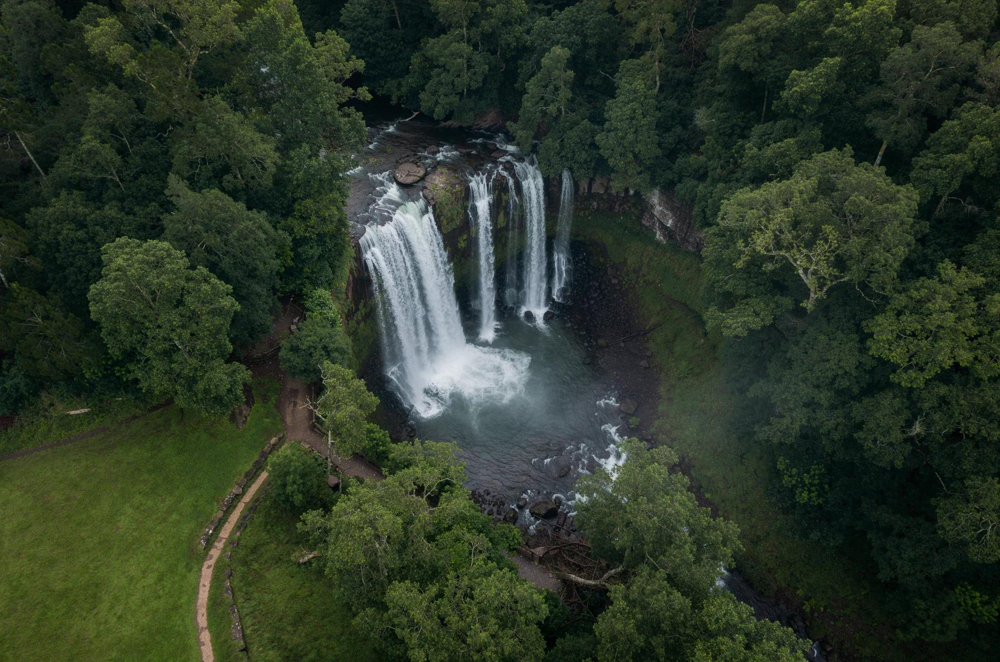
官方 prompt（英文原文，389 字）
An aerial view of a waterfall cascading through a dense, verdant forest. The water flows down a rocky cliff into a pool, creating mist around the base. Lush, dark green trees surround the waterfall, contrasting with the lighter green grass visible in the bottom left. A pathway winds through the forest, leading towards the waterfall, suggesting a blend of untamed nature and human access.An editorial spread with giant letterforms reading Notes from an Empty Pool across orange and white.
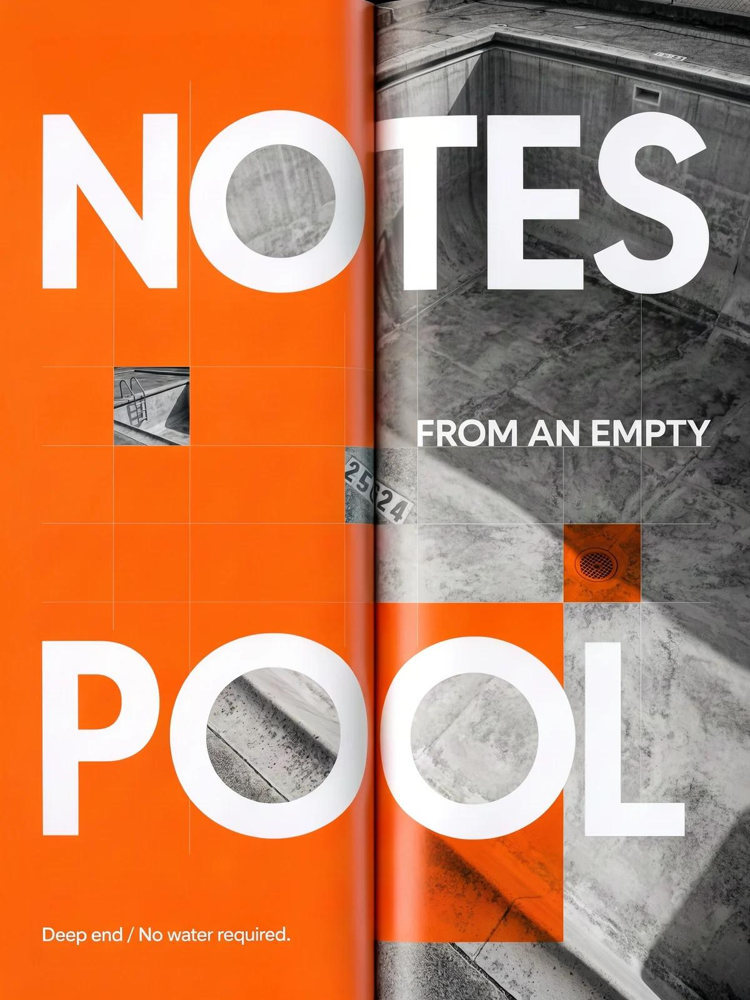
官方 prompt（英文原文，1519 字）
Create a finished 3:4 original experimental graphic design artwork.
DESIGN LANGUAGE: Experimental flat double-page editorial spread. Giant letterforms cross the central gutter, tiny photographs interrupt the grid, one vivid field contrasts with a grayscale image field. Supplied copy only, no filler paragraphs.
UNIQUE VISUAL IDEA: overhead photographs of an invented empty swimming pool interrupted by enormous circular letter counters.
COMPOSITION: Make the visual and title physically interact across most of the canvas; use intentional overlap while preserving legibility. Let this specific visual idea determine the layout. Preserve its conceptual surprise.
EXACT TITLE: "NOTES FROM AN EMPTY POOL"
EXACT SECONDARY COPY: "Deep end / No water required."
Show the complete designed double-page spread, filling the image, with a narrow visible gutter.
The title must be confidently typeset and readable. The small supplied sentence is the only supporting copy. No invented filler paragraphs. Type should feel integral to the material, scene or composition, not automatically placed as a generic heading over a small centered object. Design a visually adventurous, professionally resolved piece with clear hierarchy, deliberate contrast and rich details. Use fresh invented imagery and original letter arrangements; do not reproduce any existing poster, brand, logo, artwork, artist signature, campaign, famous character or reference photograph. No reference image is supplied. No watermarks, web addresses or QR codes.An infographic poster titled The Garden of Misplaced Apostrophes, with a winding comma-shaped topiary path.
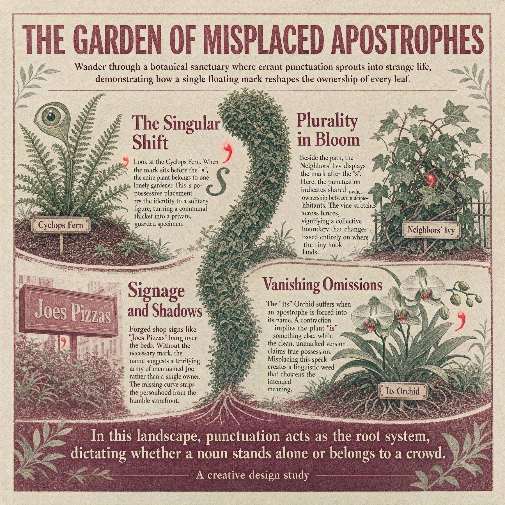
官方 prompt（英文原文，3836 字）
Create a finished 1:1 long-form infographic poster. This is a TEXT-RICH graphic design study. Give the artwork a memorable composition specific to its concept, with roughly half the area for legible longer text. Integrate the prose into the authored visual arrangement; do not default to repeated cards or a generic five-panel grid.
ART DIRECTION: Warm risograph-like texture, burgundy and sage with visible paper grain, bold headlines and clean readable text. Invent a bespoke central diagram specifically for this concept: the garden of misplaced apostrophes. Shape the composition around the relationships in the brief, not a reusable card grid. The prose should occupy clear uncluttered areas alongside the diagram. Keep a strong reading sequence, large body text and no text over detailed illustration.
VISUAL SUBJECT: A central, winding topiary path shaped like a giant comma. At each bend, stylized plants represent different grammatical rules. The Cyclops Fern has one large leaf, while the Neighbors' Ivy intertwines multiple stems. Faded burgundy shop signs float above the sage-colored foliage, with glowing red apostrophes highlighting the specific placement errors discussed in the text.
SOURCE BRIEF FOR DIAGRAM CONTENT: Turn punctuation errors into a whimsical planted landscape; explain how placement changes ownership, omission and the reading of invented shop names.
EXACT VISIBLE COPY, reproduce every sentence verbatim with correct spelling and punctuation. The headings below describe layout roles and are not extra printed words.
TITLE: "THE GARDEN OF MISPLACED APOSTROPHES"
INTRODUCTION: "Wander through a botanical sanctuary where errant punctuation sprouts into strange life, demonstrating how a single floating mark reshapes the ownership of every leaf."
SECTION 1 HEADING: "The Singular Shift"
SECTION 1 BODY: "Look at the Cyclops Fern. When the mark sits before the 's', the entire plant belongs to one lonely gardener. This possessive placement anchors the identity to a solitary figure, turning a communal thicket into a private, guarded specimen."
SECTION 2 HEADING: "Plurality in Bloom"
SECTION 2 BODY: "Beside the path, the Neighbors' Ivy displays the mark after the 's'. Here, the punctuation indicates shared ownership between multiple inhabitants. The vine stretches across fences, signifying a collective boundary that changes based entirely on where the tiny hook lands."
SECTION 3 HEADING: "Vanishing Omissions"
SECTION 3 BODY: "The 'Its' Orchid suffers when an apostrophe is forced into its name. A contraction implies the plant 'is' something else, while the clean, unmarked version claims true possession. Misplacing this speck creates a linguistic weed that chokes the intended meaning."
SECTION 4 HEADING: "Signage and Shadows"
SECTION 4 BODY: "Forged shop signs like 'Joes Pizzas' hang over the beds. Without the necessary mark, the name suggests a terrifying army of men named Joe rather than a single owner. The missing curve strips the personhood from the humble storefront."
BOTTOM TAKEAWAY: "In this landscape, punctuation acts as the root system, dictating whether a noun stands alone or belongs to a crowd."
FOOTER: "A creative design study"
TYPESETTING: The 218 words of supplied prose are essential visual content, not instructions to summarize. Set complete paragraphs in comfortably readable body type, roughly 30â36 pixels at a 2K long edge. Short line lengths, generous leading and at least 5 percent exterior margins. Headings clearly larger than body text. Keep all 4 sections, introduction and takeaway fully visible. Add only the supplied diagram labels where needed. Avoid duplicate paragraphs, invented filler, ellipses, illegible pseudo-text or cut-off sentences. Keep diagram lines away from prose. A polished flat artwork filling the whole image, not a framed mockup.An infographic titled The Afterimage Factory, with a red circle and fading ghost outlines on charcoal.
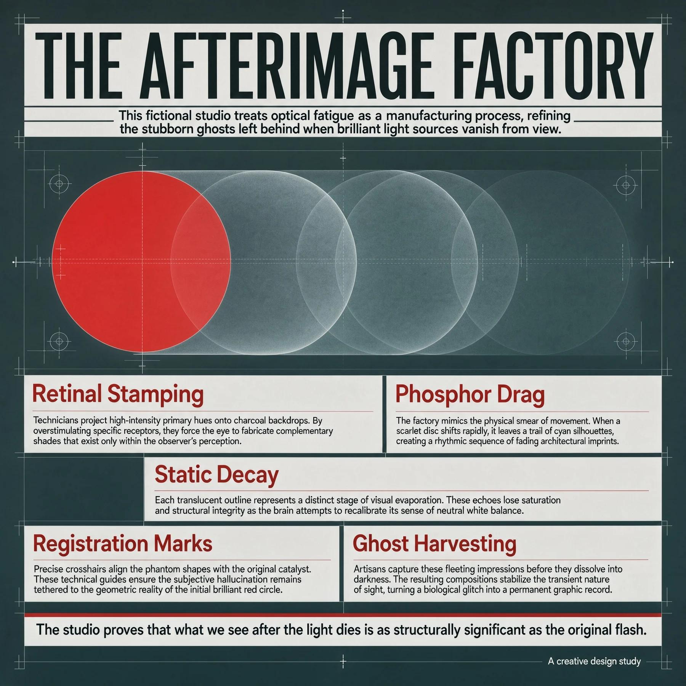
官方 prompt（英文原文，3518 字）
Create a finished 1:1 long-form infographic poster. This is a TEXT-RICH graphic design study. Give the artwork a memorable composition specific to its concept, with roughly half the area for legible longer text. Integrate the prose into the authored visual arrangement; do not default to repeated cards or a generic five-panel grid.
ART DIRECTION: A brilliant red circle passes through three translucent ghost outlines on charcoal, wide white reading bands, technical registration marks.
VISUAL SUBJECT: A vibrant red circle sits at the far left of a charcoal field. Extending to the right, three translucent, desaturated ghost outlines overlap, mimicking a motion trail. Wide white horizontal bands anchor the text blocks, while thin technical registration marks and crosshairs surround the shapes to emphasize the factory's clinical, manufactured approach to visual echoes.
SOURCE BRIEF FOR DIAGRAM CONTENT: A fictional studio makes visual echoes from bright shapes, explicitly an artistic metaphor rather than medical explanation.
EXACT VISIBLE COPY, reproduce every sentence verbatim with correct spelling and punctuation. The headings below describe layout roles and are not extra printed words.
TITLE: "THE AFTERIMAGE FACTORY"
INTRODUCTION: "This fictional studio treats optical fatigue as a manufacturing process, refining the stubborn ghosts left behind when brilliant light sources vanish from view."
SECTION 1 HEADING: "Retinal Stamping"
SECTION 1 BODY: "Technicians project high-intensity primary hues onto charcoal backdrops. By overstimulating specific receptors, they force the eye to fabricate complementary shades that exist only within the observerâs perception."
SECTION 2 HEADING: "Phosphor Drag"
SECTION 2 BODY: "The factory mimics the physical smear of movement. When a scarlet disc shifts rapidly, it leaves a trail of cyan silhouettes, creating a rhythmic sequence of fading architectural imprints."
SECTION 3 HEADING: "Static Decay"
SECTION 3 BODY: "Each translucent outline represents a distinct stage of visual evaporation. These echoes lose saturation and structural integrity as the brain attempts to recalibrate its sense of neutral white balance."
SECTION 4 HEADING: "Registration Marks"
SECTION 4 BODY: "Precise crosshairs align the phantom shapes with the original catalyst. These technical guides ensure the subjective hallucination remains tethered to the geometric reality of the initial brilliant red circle."
SECTION 5 HEADING: "Ghost Harvesting"
SECTION 5 BODY: "Artisans capture these fleeting impressions before they dissolve into darkness. The resulting compositions stabilize the transient nature of sight, turning a biological glitch into a permanent graphic record."
BOTTOM TAKEAWAY: "The studio proves that what we see after the light dies is as structurally significant as the original flash."
FOOTER: "A creative design study"
TYPESETTING: The 197 words of supplied prose are essential visual content, not instructions to summarize. Set complete paragraphs in comfortably readable body type, roughly 26â32 pixels at a 2K long edge. Short line lengths, generous leading and at least 5 percent exterior margins. Headings clearly larger than body text. Keep all 5 sections, introduction and takeaway fully visible. Add only the supplied diagram labels where needed. Avoid duplicate paragraphs, invented filler, ellipses, illegible pseudo-text or cut-off sentences. Keep diagram lines away from prose. A polished flat artwork filling the whole image, not a framed mockup.An infographic titled The Language of a Hand-Painted Scoreboard, showing an exploded scoreboard module.
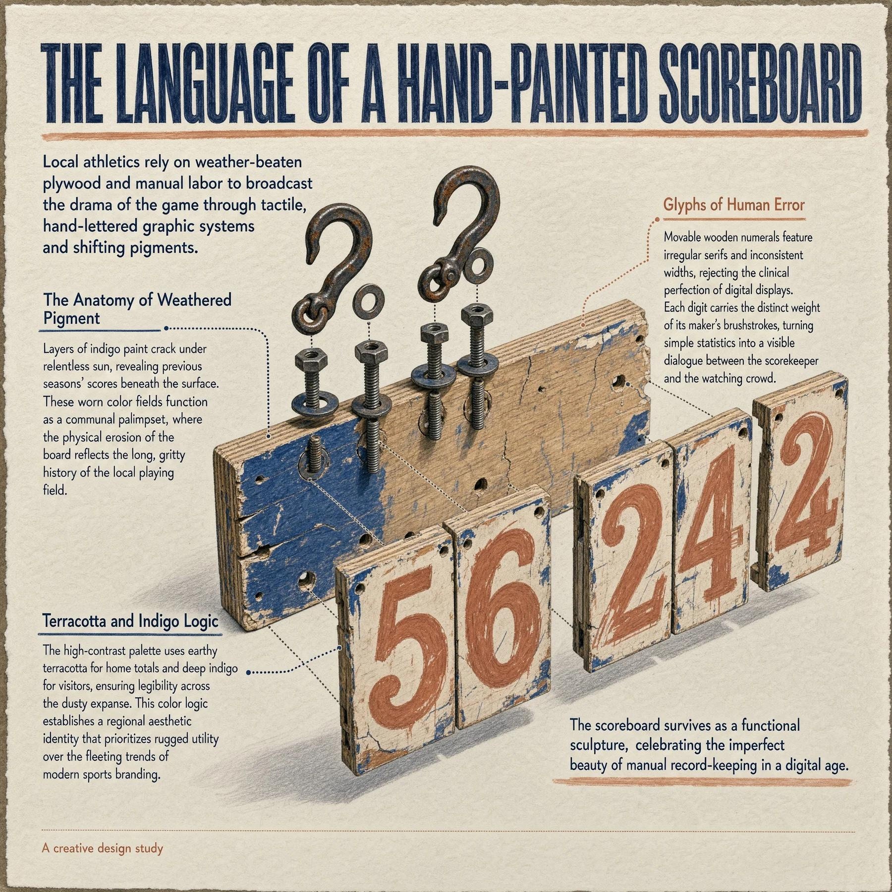
官方 prompt（英文原文，3653 字）
Create a finished 1:1 long-form infographic poster. This is a TEXT-RICH graphic design study. Give the artwork a memorable composition specific to its concept, with roughly half the area for legible longer text. Integrate the prose into the authored visual arrangement; do not default to repeated cards or a generic five-panel grid.
ART DIRECTION: Detailed colored-pencil illustration with modern typographic hierarchy, terracotta, indigo and natural paper white. Invent a bespoke central diagram specifically for this concept: the language of a hand-painted scoreboard. Shape the composition around the relationships in the brief, not a reusable card grid. The prose should occupy clear uncluttered areas alongside the diagram. Keep a strong reading sequence, large body text and no text over detailed illustration.
VISUAL SUBJECT: A central diagram depicts a disassembled scoreboard module. Exploded views show the heavy iron hooks, the chipped indigo plywood backing, and a set of hand-lettered terracotta numerals. Dotted lines connect these components to the three text blocks, illustrating how the physical weight of the timber interacts with the painted typography to form a cohesive visual language.
SOURCE BRIEF FOR DIAGRAM CONTENT: A fictional local game display uses movable numerals, worn color fields and irregular lettering to create a communal graphic identity.
EXACT VISIBLE COPY, reproduce every sentence verbatim with correct spelling and punctuation. The headings below describe layout roles and are not extra printed words.
TITLE: "THE LANGUAGE OF A HAND-PAINTED SCOREBOARD"
INTRODUCTION: "Local athletics rely on weather-beaten plywood and manual labor to broadcast the drama of the game through tactile, hand-lettered graphic systems and shifting pigments."
SECTION 1 HEADING: "The Anatomy of Weathered Pigment"
SECTION 1 BODY: "Layers of indigo paint crack under relentless sun, revealing previous seasonsâ scores beneath the surface. These worn color fields function as a communal palimpsest, where the physical erosion of the board reflects the long, gritty history of the local playing field."
SECTION 2 HEADING: "Glyphs of Human Error"
SECTION 2 BODY: "Movable wooden numerals feature irregular serifs and inconsistent widths, rejecting the clinical perfection of digital displays. Each digit carries the distinct weight of its makerâs brushstrokes, turning simple statistics into a visible dialogue between the scorekeeper and the watching crowd."
SECTION 3 HEADING: "Terracotta and Indigo Logic"
SECTION 3 BODY: "The high-contrast palette uses earthy terracotta for home totals and deep indigo for visitors, ensuring legibility across the dusty expanse. This color logic establishes a regional aesthetic identity that prioritizes rugged utility over the fleeting trends of modern sports branding."
BOTTOM TAKEAWAY: "The scoreboard survives as a functional sculpture, celebrating the imperfect beauty of manual record-keeping in a digital age."
FOOTER: "A creative design study"
TYPESETTING: The 182 words of supplied prose are essential visual content, not instructions to summarize. Set complete paragraphs in comfortably readable body type, roughly 30â36 pixels at a 2K long edge. Short line lengths, generous leading and at least 5 percent exterior margins. Headings clearly larger than body text. Keep all 3 sections, introduction and takeaway fully visible. Add only the supplied diagram labels where needed. Avoid duplicate paragraphs, invented filler, ellipses, illegible pseudo-text or cut-off sentences. Keep diagram lines away from prose. A polished flat artwork filling the whole image, not a framed mockup.An ochre and black infographic titled The Anatomy of a Stage Direction, with a hand reaching toward a lamp.
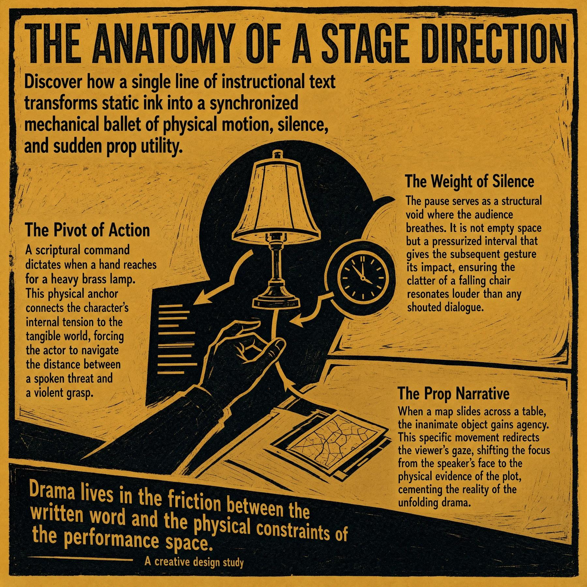
官方 prompt（英文原文，3447 字）
Create a finished 1:1 long-form infographic poster. This is a TEXT-RICH graphic design study. Give the artwork a memorable composition specific to its concept, with roughly half the area for legible longer text. Integrate the prose into the authored visual arrangement; do not default to repeated cards or a generic five-panel grid.
ART DIRECTION: Graphic woodcut-like silhouettes, saturated ochre and ink black, strong contours and undistracted text blocks. Invent a bespoke central diagram specifically for this concept: the anatomy of a stage direction. Shape the composition around the relationships in the brief, not a reusable card grid. The prose should occupy clear uncluttered areas alongside the diagram. Keep a strong reading sequence, large body text and no text over detailed illustration.
VISUAL SUBJECT: A central diagram features a thick, ink-black silhouette of a hand reaching toward a stark ochre lamp. Stylized vectors emerge from the hand, branching into three distinct paths: one leading to a block of dialogue, another to a clock face representing the pause, and a third to a sliding map. The ochre background provides a high-contrast negative space.
SOURCE BRIEF FOR DIAGRAM CONTENT: An original short script becomes a visual diagram linking spoken words, a gesture, a pause and an unexpected prop movement.
EXACT VISIBLE COPY, reproduce every sentence verbatim with correct spelling and punctuation. The headings below describe layout roles and are not extra printed words.
TITLE: "THE ANATOMY OF A STAGE DIRECTION"
INTRODUCTION: "Discover how a single line of instructional text transforms static ink into a synchronized mechanical ballet of physical motion, silence, and sudden prop utility."
SECTION 1 HEADING: "The Pivot of Action"
SECTION 1 BODY: "A scriptural command dictates when a hand reaches for a heavy brass lamp. This physical anchor connects the characterâs internal tension to the tangible world, forcing the actor to navigate the distance between a spoken threat and a violent grasp."
SECTION 2 HEADING: "The Weight of Silence"
SECTION 2 BODY: "The pause serves as a structural void where the audience breathes. It is not empty space but a pressurized interval that gives the subsequent gesture its impact, ensuring the clatter of a falling chair resonates louder than any shouted dialogue."
SECTION 3 HEADING: "The Prop Narrative"
SECTION 3 BODY: "When a map slides across a table, the inanimate object gains agency. This specific movement redirects the viewer's gaze, shifting the focus from the speakerâs face to the physical evidence of the plot, cementing the reality of the unfolding drama."
BOTTOM TAKEAWAY: "Drama lives in the friction between the written word and the physical constraints of the performance space."
FOOTER: "A creative design study"
TYPESETTING: The 178 words of supplied prose are essential visual content, not instructions to summarize. Set complete paragraphs in comfortably readable body type, roughly 30â36 pixels at a 2K long edge. Short line lengths, generous leading and at least 5 percent exterior margins. Headings clearly larger than body text. Keep all 3 sections, introduction and takeaway fully visible. Add only the supplied diagram labels where needed. Avoid duplicate paragraphs, invented filler, ellipses, illegible pseudo-text or cut-off sentences. Keep diagram lines away from prose. A polished flat artwork filling the whole image, not a framed mockup.An optical black and white poster reading Bend the Silence, cut by a vivid orange plane.
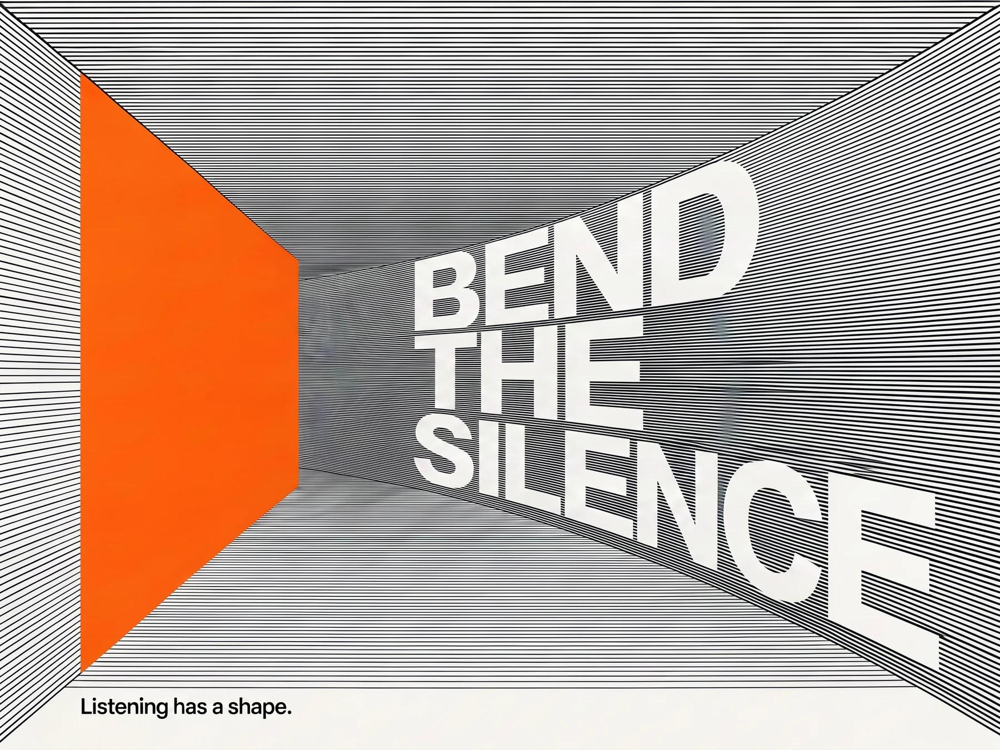
官方 prompt（英文原文，1408 字）
Create a finished 4:3 original experimental graphic design artwork.
DESIGN LANGUAGE: Black and white optical geometry interrupted by one vivid orange plane. Thin parallel lines bend around negative-space lettering; use precise printing and a highly original spatial illusion.
UNIQUE VISUAL IDEA: a long curved corridor whose striped walls become the negative space of the title.
COMPOSITION: Build a strongly asymmetric composition with one enormous focal gesture and a tightly aligned small caption. Let this specific visual idea determine the layout. Preserve its conceptual surprise.
EXACT TITLE: "BEND THE SILENCE"
EXACT SECONDARY COPY: "Listening has a shape."
Artwork fills the image; no framed poster mockup and no presentation board.
The title must be confidently typeset and readable. The small supplied sentence is the only supporting copy. No invented filler paragraphs. Type should feel integral to the material, scene or composition, not automatically placed as a generic heading over a small centered object. Design a visually adventurous, professionally resolved piece with clear hierarchy, deliberate contrast and rich details. Use fresh invented imagery and original letter arrangements; do not reproduce any existing poster, brand, logo, artwork, artist signature, campaign, famous character or reference photograph. No reference image is supplied. No watermarks, web addresses or QR codes.Sewn inflatable letters reading Air Is Taking a Stand, lit theatrically on a blue backdrop.
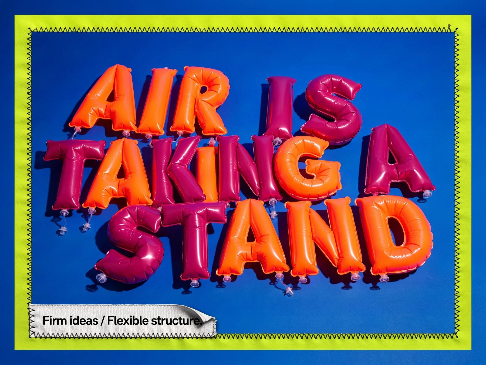
官方 prompt（英文原文，1421 字）
Create a finished 4:3 original experimental graphic design artwork.
DESIGN LANGUAGE: Tactile sewn inflatable objects, exaggerated seams, theatrical hard lighting, a bold saturated background. Title made of inflated forms with visible air valves; assertive graphic framing.
UNIQUE VISUAL IDEA: inflated pillar-shaped letters leaning together like a soft crowd.
COMPOSITION: Make the visual and title physically interact across most of the canvas; use intentional overlap while preserving legibility. Let this specific visual idea determine the layout. Preserve its conceptual surprise.
EXACT TITLE: "AIR IS TAKING A STAND"
EXACT SECONDARY COPY: "Firm ideas / Flexible structure."
Artwork fills the image; no framed poster mockup and no presentation board.
The title must be confidently typeset and readable. The small supplied sentence is the only supporting copy. No invented filler paragraphs. Type should feel integral to the material, scene or composition, not automatically placed as a generic heading over a small centered object. Design a visually adventurous, professionally resolved piece with clear hierarchy, deliberate contrast and rich details. Use fresh invented imagery and original letter arrangements; do not reproduce any existing poster, brand, logo, artwork, artist signature, campaign, famous character or reference photograph. No reference image is supplied. No watermarks, web addresses or QR codes.The Northern Lights glowing green and purple over a dark landscape under a starry sky.
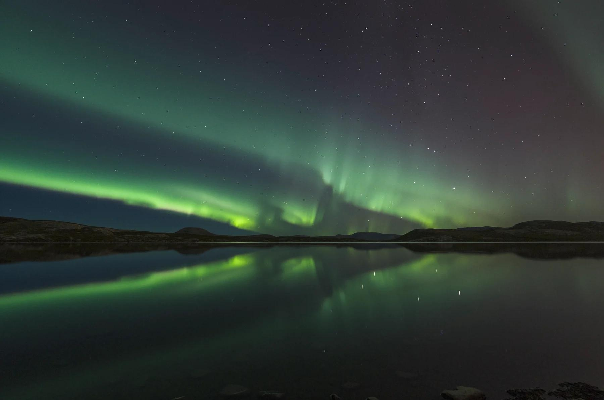
官方 prompt（英文原文，329 字）
A serene night scene with the Northern Lights casting a vibrant green and purplish glow across the sky. Stars dot the background, adding a speckled effect. A silhouette of hilly terrain outlines the horizon, and the colorful aurora and stars perfectly reflect in a still body of water, creating a symmetrical and tranquil visual.Three prairie dogs standing upright on a dirt mound in warm, golden light.
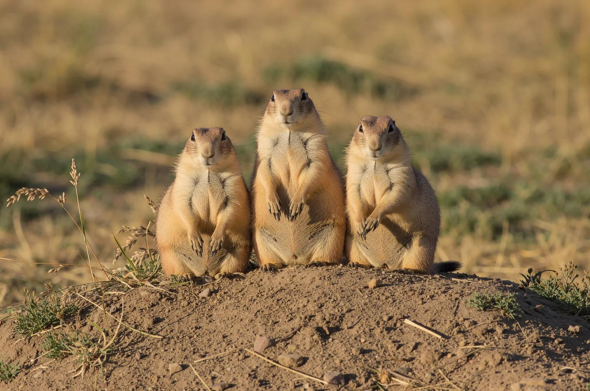
Three prairie dogs stand upright on a small dirt mound, facing the camera. The background is a blurred, sunlit field with golden hues, emphasizing the warm lighting. The prairie dogs appear alert, with a few green plants and scattered dry grass visible around them.Two clownfish swimming in a dimly lit aquarium in front of soft orange coral.
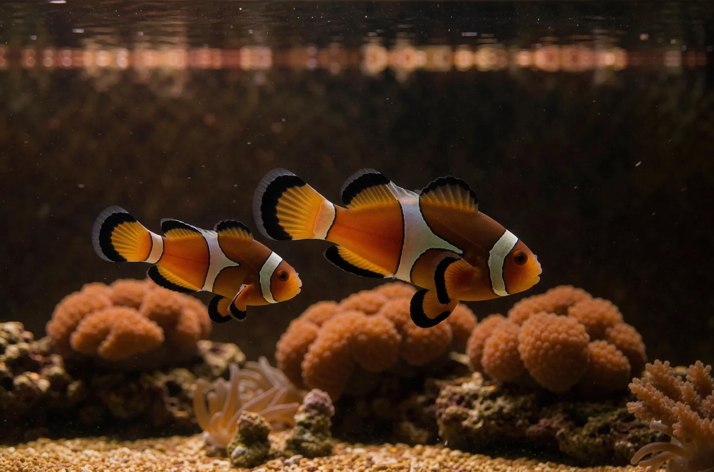
Two vibrant clownfish swimming together in a dimly lit aquarium. The water reflects warm, earthy tones, and the background features soft orange coral formations, creating an underwater atmosphere.Two red pandas resting on a bamboo structure, one half asleep and one fully asleep.
Two red pandas resting on a bamboo structure. One is lying down with eyes partially open, while the other is fully asleep. Their reddish-brown fur contrasts with the light brown bamboo. The background is softly blurred with green and brown tones, suggesting a natural setting.Oktoberfest poster grounding comparison
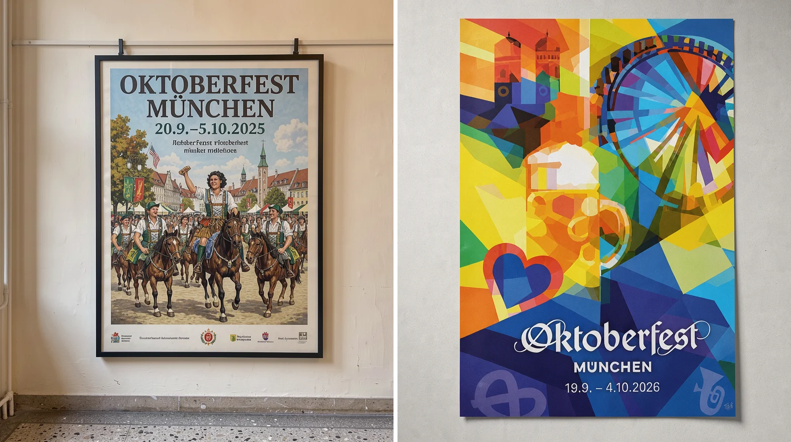
A photograph of this year's official Oktoberfest posterThree replacements at once

官方 prompt（英文原文，793 字）
Modify <ref_image_0> by making three replacements. On the lower left path, replace the tiny anthropomorphic wolf with a cyberpunk dog <wolf_1>. On the lower right, replace the fallen frosted bamboo log with a fallen bamboo leaf made out of gold <log_1>. In the middle of the misty forest, replace the small dark bird perched on a branch with a bird made out of a robot <bird_1>. Keep the rest of the scene exactly unchanged, preserving the dense upper bamboo leaves <bamboo_1>, the vertical bamboo trunks <bamboo_2> receding into the fog, the frosted ground and lower stalks <bamboo_3>, the dramatic slanting sunbeams <light_1>, the thick foreground bamboo trunk <bamboo_4> on the right, the frozen stream <stream_1>, the stone lantern <lantern_1>, and the floating frost flakes <particles_1>.Swap the subject
官方 prompt（英文原文，571 字）
In <ref_image_0>, replace the tiny anthropomorphic wolf standing on the left side of the frosty path with a dog <wolf_1>. Keep the rest of the image exactly unchanged, including the illuminated upper bamboo leaves <bamboo_1>, the shadowed vertical trunks <bamboo_2>, the frost-covered lower stalks and ground <bamboo_3>, the slanting shafts of light <light_1>, the massive foreground trunk <bamboo_4>, the fallen hollow log <log_1>, the frozen stream <stream_1>, the stone lantern <lantern_1>, the floating frost flakes <particles_1>, and the small perched bird <bird_1>.Recolor, keep the text
官方 prompt（英文原文，308 字）
In <ref_image_0>, change the bright red hooded jacket worn by the person <person_1> standing atop the rock pinnacle <rock_1> to blue. Keep everything else in the image exactly unchanged, including the text <En_Text_1>, the overcast sky <sky_1>, the distant hills <hills_1>, the composition, and the lighting.Obsidian mesa
Change the central mesa to polished black obsidian.Leopard-print moth
Change the solid black moth to a leopard print pattern.Metallic silk
Change the purple fabric to metallic silk.a close-up of chunky purple knit yarn, turned into a purple chunky-knit blanket draped over a white studio block.
Create a blanket using the exact texture from the uploaded image, photographed in a clean studio setup.a dome pendant lamp with a slatted lower shade over a living room, recolored from yellow and orange to green.
Change the Lamp color to #34eb61a flock of black birds on a pale sky, with one bird in the middle recolored pink.
a flock of black birds on a pale sky, with one bird in the middle recolored pink.
a short-eared owl in flight over dried wildflowers, recolored from brown and tan to snowy white and charcoal grey.
a short-eared owl in flight over dried wildflowers, recolored from brown and tan to snowy white and charcoal grey.
a woman in a light blue robe riding a tiger through green forest, moved to a snowy Japanese landscape with red maple trees.
Now they are in a snowy Japanese landscape with a Japanese Maple tree.Move a box
官方 prompt（英文原文，419 字）
In <ref_image_0>, move the miniature grey amigurumi knight figure <knight_1> upwards and to the left along the yarn cliff <cliff_1>. Leave the polished steel tapestry needle <needle_1> in its original position in the air. Keep the rest of the image completely unchanged, preserving the blurred yarn backdrop <backdrop_1>, the large knitted dragon <dragon_1>, and the fiery orange thread <fire_1> suspended between them.Recolor two boxes
In <ref_image_0>, change the large tiger <animal_1> and the small glowing butterfly <insect_1> to be pink. Keep the massive fallen log <log_1>, the falling snow <snow_1>, and the dark background trees <trees_1> exactly unchanged.FLUX 3 Image result: a miniature van in place of the cartridge


replace the cartridge from image 1 with the van in image 2, adjust the lighting on the van to integrate well within image 1FLUX 3 Image result: the temple in the palette and texture of image 2
Turn Image 1 in the Style of Image 2Replace cartridge with van


replace the cartridge from image 1 with the van in image 2, adjust the lighting on the van to integrate well within image 1Alphabet poster

官方 prompt（英文原文，2902 字）
Digital graphic design mockup shot straight-on with a top-down view under flat, even studio-style lighting. A flat, neutral gray background <background_1> fills the frame. Centered in the composition is a vertical, rectangular black poster <poster_1>, appearing to hover just above the surface due to a soft, diffuse drop shadow extending along its left and bottom edges. The poster displays the complete English alphabet rendered in stark white with a geometric glitch aesthetic, featuring horizontal shifts and missing angular slices. The letters are arranged systematically across five horizontal rows: the first row <En_Text_1>, the second row <En_Text_2>, the third row <En_Text_3>, the fourth row <En_Text_4>, and the fifth row <En_Text_5>. Centered near the bottom edge of the poster is a logo <graphic_1>. Immediately below this emblem, a small line of text <En_Text_6> completes the design.
[{"id": "background_1", "bbox": [0, 0, 1000.0, 1000.0], "desc": "A flat, neutral gray background filling the entire frame, completely devoid of surface glare or texture."}, {"id": "poster_1", "bbox": [100, 250, 900, 750], "desc": "A vertical, rectangular black poster centered in the frame with perfectly straight, undistorted edges. A soft, diffuse drop shadow extends along its left and bottom edges, creating a hovering illusion."}, {"id": "En_Text_1", "bbox": [150, 300, 250, 700], "desc": "Stark white, uppercase letters \"A B C D E F\" featuring a geometric glitch aesthetic with horizontal shifts, staggered alignments, and missing angular slices mimicking digital distortion."}, {"id": "En_Text_2", "bbox": [280, 300, 380, 700], "desc": "Stark white, uppercase letters \"G H I J K L\" featuring a geometric glitch aesthetic with horizontal shifts, staggered alignments, and missing angular slices mimicking digital distortion."}, {"id": "En_Text_3", "bbox": [410, 320, 510, 680], "desc": "Stark white, uppercase letters \"M N O P Q\" featuring a geometric glitch aesthetic with horizontal shifts, staggered alignments, and missing angular slices mimicking digital distortion."}, {"id": "En_Text_4", "bbox": [540, 320, 640, 680], "desc": "Stark white, uppercase letters \"R S T U V\" featuring a geometric glitch aesthetic with horizontal shifts, staggered alignments, and missing angular slices mimicking digital distortion."}, {"id": "En_Text_5", "bbox": [670, 350, 770, 650], "desc": "Stark white, uppercase letters \"W X Y Z\" featuring a geometric glitch aesthetic with horizontal shifts, staggered alignments, and missing angular slices mimicking digital distortion."}, {"id": "graphic_1", "bbox": [800, 460, 830, 540], "desc": "A minimalist logo depicting a stylized letter \"M\" constructed from overlapping, thin white triangular outlines."}, {"id": "En_Text_6", "bbox": [840, 450, 860, 550], "desc": "The text \"MIKE NESS\" printed in a very small, clean, white sans-serif typeface."}]Concrete arches

官方 prompt（英文原文，4344 字）
Full-color architectural photograph shot on 35mm film from a low-angle perspective at ground level, featuring bright, direct sunlight and visible film grain. Under a clear, pale blue sky <sky_1>, a Brutalist concrete structure <building_1> dominates the right and center of the frame. The building features three clusters of tall, nested parabolic arches. At the base of the central section, a flat concrete overhang <overhang_1> shelters a small, dark entrance <entrance_1>. Mounted on the overhang is a large, rectangular red sign <sign_1> displaying a circular emblem <emblem_1> on the left, a line of Georgian script <Ka_Text_1> on top, and English text <En_Text_1> below. Along the ledge behind the sign, several small flags on thin poles <flags_1> are visible. To the left stands a portion of an older, traditional building <building_2> with a slender, tiered tower topped by a metallic spire and a five-pointed star. In the foreground on the far left, a dark green coniferous tree <tree_1> partially obscures the lower levels of a glass-fronted building <building_3>. The structures sit behind a wide set of shallow concrete steps <steps_1> that lead down to a paved plaza made of grey stone blocks <plaza_1> filling the bottom of the frame.
[{"id": "sky_1", "bbox": [0, 0, 400, 1000.0], "desc": "A clear, pale blue sky filling the upper background, with a slight gradient toward white near the horizon and a faint film grain visible."}, {"id": "building_1", "bbox": [150, 350, 750, 950], "desc": "A Brutalist concrete structure featuring three distinct clusters of tall, nested parabolic arches, with the central cluster reaching the highest. The raw, weathered concrete shows subtle variations in grey tones, vertical water streaking, and deep, sharp shadows cast within the recesses."}, {"id": "overhang_1", "bbox": [650, 500, 700, 750], "desc": "A flat, thick concrete overhang protruding from the base of the central arched section, casting a harsh, dark shadow beneath it."}, {"id": "entrance_1", "bbox": [700, 550, 750, 700], "desc": "A small, dark entrance area recessed beneath the concrete overhang, its interior details lost in deep shadow."}, {"id": "sign_1", "bbox": [640, 520, 690, 730], "desc": "A large, rectangular red sign mounted securely to the front face of the concrete overhang, bearing yellow text and a circular emblem."}, {"id": "emblem_1", "bbox": [645, 525, 685, 555], "desc": "A circular yellow emblem positioned on the left side of the red sign, featuring abstract geometric inner markings."}, {"id": "Ka_Text_1", "bbox": [645, 560, 660, 720], "desc": "Yellow Georgian script reading \"á¡áá¥áá áááááá¡ á¥á áá¡á¢ááá-áááááá áá¢áá£áá áááá¨áá á\" printed along the upper section of the red sign in a bold, sans-serif font."}, {"id": "En_Text_1", "bbox": [665, 560, 685, 720], "desc": "Yellow, bold sans-serif typography reading \"CHRISTIAN DEMOCRATIC UNION OF GEORGIA\" arranged across two lines on the lower portion of the red sign."}, {"id": "flags_1", "bbox": [590, 520, 640, 730], "desc": "Several small, slightly drooping flags attached to thin, mismatched metal poles positioned along the ledge just behind the red sign."}, {"id": "building_2", "bbox": [100, 100, 550, 320], "desc": "A portion of an older, traditional building featuring a tall, slender tower topped with a metallic spire and a five-pointed star. It has a classic, tiered design with arched windows, decorative stonework, and uneven weathering on its pale facade."}, {"id": "tree_1", "bbox": [450, 0, 850, 280], "desc": "A dark green coniferous tree with dense, textured branches, standing in the foreground and partially obscuring the lower levels of the glass building."}, {"id": "building_3", "bbox": [400, 0, 700, 200], "desc": "A modern, glass-fronted building with dark, reflective windows, partially visible behind the foreground tree."}, {"id": "steps_1", "bbox": [750, 300, 820, 1000.0], "desc": "A set of shallow concrete steps spanning the width of the arched structure, showing minor edge wear and a few scattered dry leaves."}, {"id": "plaza_1", "bbox": [820, 0, 1000.0, 1000.0], "desc": "A wide, paved plaza occupying the foreground, constructed of grey stone blocks with slightly uneven seams and a few scuff marks visible under the bright, direct lighting."}]Three on a bench

官方 prompt（英文原文，2835 字）
Full-color indoor 35mm photograph with a slight film grain and a warm color cast, lit by harsh, direct camera flash that casts sharp shadows against the background. A light-colored wooden bench <bench_1> sits against a wall of horizontal light-wood panels <wall_1>. On the floor beneath the bench is a vibrant moss-green rug <rug_1>. Seated on the left side of the bench is a man <person_1> captured mid-sip from a glass of amber liquid <glass_1>. In the center sits a humanoid figure <figure_1>. To the right, another man <person_2> sits with a slumped posture, looking downward at a second glass of amber liquid <glass_2> held in his hand. The framing is a full-body shot centered on the three figures, leaving a significant expanse of the wood-paneled wall visible above their heads.
[{"id": "wall_1", "bbox": [0, 0, 750, 1000.0], "desc": "An indoor wall covered in horizontal light-wood panels. The surface bears sharp, dark cast shadows from the seated subjects, characteristic of a direct, built-in camera flash."}, {"id": "bench_1", "bbox": [480, 50, 780, 950], "desc": "A simple, light-colored wooden bench frame topped with a thick, flat white cushion, spanning the width of the frame behind the subjects."}, {"id": "rug_1", "bbox": [730, 0, 1000.0, 1000.0], "desc": "A vibrant moss-green rug covering the floor area beneath the bench, its textured surface illuminated by the harsh overhead flash."}, {"id": "person_1", "bbox": [300, 80, 920, 380], "desc": "A man with fair skin, short brown hair, and glasses. He wears a white short-sleeved button-down shirt with thin vertical black stripes and embroidered patches, including a cartoon dog on the chest. He has black trousers and bright red high-top sneakers. His left hand rests on his knee, revealing a black wristwatch, while his right hand holds a glass to his mouth."}, {"id": "glass_1", "bbox": [360, 240, 430, 300], "desc": "A clear glass tumbler partially filled with an amber liquid, held up near the face of the man on the left."}, {"id": "figure_1", "bbox": [320, 360, 900, 640], "desc": "A humanoid figure encased in a matte grey, form-fitting fabric suit. The rounded head features two small, dark, circular eyes. Large, white-and-grey robotic hands with articulated fingers are held in a stylized, geometric pose across its chest. Its feet are covered in bulky, rounded grey footwear matching the suit."}, {"id": "person_2", "bbox": [350, 620, 920, 920], "desc": "A man with fair skin and short dark hair. He wears a black t-shirt and loose-fitting blue jeans. He has a slumped posture with his left arm resting across his lap, looking downward. His right hand holds a glass of liquid."}, {"id": "glass_2", "bbox": [640, 680, 720, 750], "desc": "A clear glass tumbler containing amber liquid, held low over the lap in the right hand of the man on the right."}]Cabin, Sauna

官方 prompt（英文原文，2792 字）
Digital composite image featuring a dense, sunlit forest <forest_1> as the background, shot at eye level. Centered in the foreground is a large, semi-transparent rectangular graphic overlay. Its upper section <region_4> is a subtle clear tint over the canopy. The middle section of the overlay is divided horizontally into two bands. The top band <region_1> consists of vertical stripes alternating between clear transparency and translucent chartreuse yellow, ending in a solid chartreuse square on the far right that contains a black directional sign <En_Text_1>. The lower band <region_2> mirrors this structure with alternating clear and chartreuse stripes, ending in a solid chartreuse square on the far left that holds another black directional sign <En_Text_2>. Below these striped bands, the overlay continues downwards as a dark, slightly distorted filter <region_3> covering the lower forest foliage, creating a sharp contrast between the organic textures of the woods and the crisp, straight edges of the rectangle.
[{"id": "forest_1", "bbox": [0, 0, 1000.0, 1000.0], "desc": "A dense forest scene with tall, rough-barked tree trunks flanking the sides, a canopy of lush green leaves above, and a floor densely carpeted with green ferns. Dappled natural sunlight filters through the trees, creating bright highlights against earthy brown and deep green shadows."}, {"id": "region_4", "bbox": [100, 300, 350, 700], "desc": "The upper section of a geometric rectangular overlay, appearing as a lightly tinted, semi-transparent pane of glass that slightly shifts the color and contrast of the forest canopy behind it."}, {"id": "region_1", "bbox": [350, 300, 450, 700], "desc": "A horizontal band divided into vertical stripes that alternate between clear transparency and translucent chartreuse yellow. On the far right edge, a solid chartreuse yellow square anchors the band."}, {"id": "En_Text_1", "bbox": [365, 615, 435, 685], "desc": "A thin, black, right-pointing arrow centered above the word \"Cabin\" in a clean, sans-serif black font."}, {"id": "region_2", "bbox": [450, 300, 550, 700], "desc": "A horizontal band directly below the first, featuring the same vertical stripes alternating between clear transparency and translucent chartreuse yellow. On the far left edge, a solid chartreuse yellow square anchors the band."}, {"id": "En_Text_2", "bbox": [465, 315, 535, 385], "desc": "A thin, black, left-pointing arrow centered above the word \"Sauna\" in a clean, sans-serif black font."}, {"id": "region_3", "bbox": [550, 300, 900, 700], "desc": "The lower section of the rectangular overlay, functioning as a dark, slightly distorted semi-transparent filter that overlays the ferns on the forest floor, dimming the greens and browns beneath its crisp geometric edges."}]Dinner by the garden

官方 prompt（英文原文，2981 字）
High-angle, full-color 35mm indoor-outdoor film photograph captured at night, featuring visible grain, deep shadows, and a shallow depth of field that renders the foreground in an atmospheric blur. The composition divides a dimly lit interior dining area on the right from an illuminated exterior garden on the left. In the blurred foreground, bathed in deep, monochromatic red light, two silhouetted figures sit at a dining table <table_1>. A young child with dark hair <person_1> faces the camera as an out-of-focus red shape, while the profile of an adult <person_2> occupies the right edge. Between them, the table holds blurred dishes <dishes_1> and a small candle <candle_1> that provides a warm orange point of light. Through a large window on the left, the sharp exterior scene is set against a pitch-black night sky <sky_1>. A Japanese pine tree <tree_1> is illuminated by a cool, artificial green light, resolving its textured bark and dense needle clusters. Below the tree, a low bamboo fence <fence_1> runs horizontally. Further back, a stone-paved path <path_1> leads into the dark garden, dotted with a few scattered warm-toned lights <lights_1>.
[{"id": "table_1", "bbox": [700, 200, 1000.0, 1000.0], "desc": "A blurred, dark dining table occupying the lower foreground, reflecting patches of red and orange light."}, {"id": "person_1", "bbox": [500, 350, 950, 650], "desc": "An out-of-focus silhouette of a young child with dark hair, rendered as a soft mass of deep red light and shadow facing the camera."}, {"id": "person_2", "bbox": [400, 700, 1000.0, 1000.0], "desc": "A heavily blurred silhouette of an adult in profile, bathed in monochromatic red light, occupying the right edge of the frame."}, {"id": "dishes_1", "bbox": [800, 400, 1000.0, 900], "desc": "A collection of heavily blurred plates and bowls, appearing as indistinct dark and red shapes on the table."}, {"id": "candle_1", "bbox": [750, 600, 820, 650], "desc": "A small, out-of-focus candle flame forming a bright, warm orange point of light amidst the red foreground."}, {"id": "sky_1", "bbox": [0, 0, 500, 600], "desc": "A pitch-black night sky filling the upper left background behind the garden foliage."}, {"id": "tree_1", "bbox": [100, 50, 750, 550], "desc": "A sharply focused Japanese pine tree illuminated by cool, vibrant emerald green light. The trunk features textured bark, supporting dense, layered clusters of needle-like foliage."}, {"id": "fence_1", "bbox": [700, 0, 850, 600], "desc": "A traditional low bamboo fence running horizontally across the garden, composed of thin, vertically aligned bamboo stalks tied with dark twine."}, {"id": "path_1", "bbox": [750, 100, 950, 400], "desc": "A stone-paved path or bridge in the deep background, slightly obscured by shadows, leading back into the dark garden."}, {"id": "lights_1", "bbox": [600, 100, 750, 500], "desc": "A few small, distant points of warm-toned light scattered across the dark landscaping in the background."}]Sixteen layouts

官方 prompt（英文原文，8539 字）
Flat, two-dimensional graphic design layout on a plain white background, presenting a four-by-four grid of sixteen rectangular wireframe panels separated by even white margins. The minimalist study explores spatial relationships using a strictly limited palette of white, black, and muted sage green. The top row features four distinct compositions: a panel <panel_1> with a green circle and a central typographic anchor <En_Text_1>, a panel <panel_2> containing a green square and vertical text <En_Text_2>, a panel <panel_3> centered on an organic wavy blob beneath curved text <En_Text_3>, and a panel <panel_4> displaying a sage-green bottle silhouette beside spaced lettering <En_Text_4>. In the second row, a panel <panel_5> with an upward triangle and bottom-right text <En_Text_5> sits next to a panel <panel_6> holding twin rectangles and vertical text <En_Text_6>. Beside them, a panel <panel_7> splits a circle around central text <En_Text_7>, while the row ends with a panel <panel_8> balancing a rotated square above its text <En_Text_8>. The third row begins with a panel <panel_9> featuring a tall rectangular sidebar and top-right text <En_Text_9>, followed by a panel <panel_10> with a lower blob and vertical text <En_Text_10>. A panel <panel_11> pairs a top-right circle with downward-curving text <En_Text_11>, and a panel <panel_12> anchors a wide bottom rectangle under top-aligned text <En_Text_12>. The bottom row completes the grid with a panel <panel_13> pointing a triangle rightward beside vertical text <En_Text_13>, a panel <panel_14> centering a large rectangle and overlaid text <En_Text_14>, a panel <panel_15> with a bottom half-circle and top-aligned text <En_Text_15>, and a final panel <panel_16> presenting a tiny grid of squares next to vertical text <En_Text_16>. In every panel, varied densities of black horizontal lines simulate body text, interacting dynamically with the shapes and typography to create a balanced structural design.
[{"id": "panel_1", "bbox": [40, 40, 250, 250], "desc": "A rectangular layout panel outlined with a thin black border against the white background. It contains a large solid sage-green circle in the upper half and two distinct columns of black horizontal lines simulating body text in the lower half."}, {"id": "En_Text_1", "bbox": [130, 60, 150, 230], "desc": "The exact text string \"CFHKNP\" rendered in a black serif font, placed horizontally across the center of the panel between the circle and the line columns."}, {"id": "panel_2", "bbox": [40, 280, 250, 490], "desc": "A rectangular layout panel featuring a solid sage-green square in the top left corner. Black horizontal lines of varying widths wrap around the square and fill the lower left area."}, {"id": "En_Text_2", "bbox": [60, 440, 230, 470], "desc": "The exact text string \"CFHKNP\" rendered in a black serif font, oriented vertically along the right edge of the panel."}, {"id": "panel_3", "bbox": [40, 520, 250, 730], "desc": "A rectangular layout panel with an organic, wavy sage-green blob centered in the middle. Dense blocks of black horizontal lines anchor the bottom third of the composition."}, {"id": "En_Text_3", "bbox": [60, 560, 100, 690], "desc": "The exact text string \"CFHKNP\" rendered in a black serif font, curved along an upward arc above the sage-green blob."}, {"id": "panel_4", "bbox": [40, 760, 250, 970], "desc": "A rectangular layout panel containing a solid sage-green bottle silhouette on the right side. The left side features sparse, staggered black horizontal lines."}, {"id": "En_Text_4", "bbox": [60, 780, 90, 950], "desc": "The exact text string \"CFHKNP\" rendered in a black serif font, placed horizontally with wide letter-spacing across the top edge."}, {"id": "panel_5", "bbox": [280, 40, 490, 250], "desc": "A rectangular layout panel displaying a large sage-green triangle pointing upwards in the center. A narrow column of black horizontal lines sits on the far left."}, {"id": "En_Text_5", "bbox": [440, 120, 470, 230], "desc": "The exact text string \"CFHKNP\" rendered in a black serif font, positioned horizontally in the bottom right corner."}, {"id": "panel_6", "bbox": [280, 280, 490, 490], "desc": "A rectangular layout panel with two tall, thin sage-green rectangles side-by-side in the center. A dense block of black lines occupies the top right quadrant."}, {"id": "En_Text_6", "bbox": [300, 300, 470, 330], "desc": "The exact text string \"CFHKNP\" rendered in a black serif font, oriented vertically along the left edge."}, {"id": "panel_7", "bbox": [280, 520, 490, 730], "desc": "A rectangular layout panel featuring a sage-green circle split horizontally into two halves with a gap between them. Black horizontal lines fill the top and bottom margins."}, {"id": "En_Text_7", "bbox": [370, 550, 400, 700], "desc": "The exact text string \"CFHKNP\" rendered in a black serif font, placed horizontally directly within the gap between the two circle halves."}, {"id": "panel_8", "bbox": [280, 760, 490, 970], "desc": "A rectangular layout panel showing a sage-green square rotated forty-five degrees into a diamond shape in the upper center. Short black horizontal lines cluster in the top left corner."}, {"id": "En_Text_8", "bbox": [420, 780, 450, 950], "desc": "The exact text string \"CFHKNP\" rendered in a black serif font, spaced out horizontally across the bottom third of the panel."}, {"id": "panel_9", "bbox": [520, 40, 730, 250], "desc": "A rectangular layout panel containing a tall sage-green rectangle acting as a left sidebar. The remaining space is filled with evenly spaced black horizontal lines."}, {"id": "En_Text_9", "bbox": [540, 120, 570, 230], "desc": "The exact text string \"CFHKNP\" rendered in a black serif font, placed horizontally in the top right corner."}, {"id": "panel_10", "bbox": [520, 280, 730, 490], "desc": "A rectangular layout panel with a small organic sage-green blob resting at the bottom. Flanking blocks of black horizontal lines frame the central vertical axis."}, {"id": "En_Text_10", "bbox": [550, 370, 700, 400], "desc": "The exact text string \"CFHKNP\" rendered in a black serif font, placed vertically down the center of the panel."}, {"id": "panel_11", "bbox": [520, 520, 730, 730], "desc": "A rectangular layout panel featuring a sage-green circle in the top right corner. A single wide column of black horizontal lines dominates the left side."}, {"id": "En_Text_11", "bbox": [650, 580, 700, 700], "desc": "The exact text string \"CFHKNP\" rendered in a black serif font, curved in a downward arc beneath the sage-green circle."}, {"id": "panel_12", "bbox": [520, 760, 730, 970], "desc": "A rectangular layout panel displaying a wide sage-green rectangle spanning the bottom edge. Three narrow columns of black horizontal lines sit above it."}, {"id": "En_Text_12", "bbox": [540, 780, 570, 950], "desc": "The exact text string \"CFHKNP\" rendered in a black serif font, placed horizontally across the top edge."}, {"id": "panel_13", "bbox": [760, 40, 970, 250], "desc": "A rectangular layout panel with a sage-green triangle pointing to the right in the center. Black horizontal lines are arranged in staggered blocks at the top and bottom."}, {"id": "En_Text_13", "bbox": [780, 60, 950, 90], "desc": "The exact text string \"CFHKNP\" rendered in a black serif font, oriented vertically along the far left edge."}, {"id": "panel_14", "bbox": [760, 280, 970, 490], "desc": "A rectangular layout panel featuring a large sage-green rectangle in the center. A dense block of black lines sits just above it."}, {"id": "En_Text_14", "bbox": [850, 300, 880, 470], "desc": "The exact text string \"CFHKNP\" rendered in a black serif font, placed horizontally across the middle of the sage-green rectangle."}, {"id": "panel_15", "bbox": [760, 520, 970, 730], "desc": "A rectangular layout panel containing a sage-green half-circle resting flat against the bottom edge. A dense block of black horizontal lines occupies the center."}, {"id": "En_Text_15", "bbox": [780, 550, 810, 700], "desc": "The exact text string \"CFHKNP\" rendered in a black serif font, placed horizontally at the very top."}, {"id": "panel_16", "bbox": [760, 760, 970, 970], "desc": "A rectangular layout panel showing a small two-by-two grid of four tiny sage-green squares in the top left. The lower left contains sparse black horizontal lines."}, {"id": "En_Text_16", "bbox": [780, 920, 950, 950], "desc": "The exact text string \"CFHKNP\" rendered in a black serif font, placed vertically along the right edge."}]Swan Lake from the wings

官方 prompt（英文原文，3364 字）
Full-color indoor photograph with the grainy texture of mid-20th-century color film, captured at eye level from the dark wings of a theater stage. The foreground is heavily blurred due to a shallow depth of field, dominated on the left by the out-of-focus silhouettes of two observers <observer_1> <observer_2> standing in deep shadow. On the far right, the shadowed, out-of-focus profile of a young man <man_1> is partially visible, his gaze directed toward the center. Framed between these dark foreground elements is a brightly lit stage where three ballerinas <ballerina_1> <ballerina_2> <ballerina_3> perform. They are dressed in stark white classical tutus, contrasting sharply with the cool, muted color palette of deep purple and black shadows filling the cavernous space behind them. Small, glowing white orbs <orbs_1> are suspended in the air near the dancers' raised hands. A strong spotlight illuminates the center of the stage, casting long, soft shadows across the floor and highlighting the stiff tulle of the costumes. In the distant background, dark vertical curtains <curtains_1> are barely visible, while a single bright stage light <stage_light_1> shines through the gloom, creating a slight lens flare.
[{"id": "observer_1", "bbox": [100, 0, 1000.0, 200], "desc": "A completely blurred, dark silhouette of a person rendered as a soft mass of deep shadow, without identifiable features, garments, or text."}, {"id": "observer_2", "bbox": [350, 150, 1000.0, 350], "desc": "A second out-of-focus, shadowy silhouette of a figure appearing as a dark, unreadable shape."}, {"id": "man_1", "bbox": [200, 820, 950, 1000.0], "desc": "The heavily shadowed, out-of-focus profile of a young man's face. He has fair skin barely catching the ambient light and short dark hair, with his eyes fixed toward the left."}, {"id": "ballerina_1", "bbox": [300, 450, 900, 600], "desc": "A female ballet dancer in sharp focus, with pale skin and dark hair pulled tightly back into a bun beneath a white feathered headpiece. She wears a traditional classical tutu with a fitted white bodice and a stiff, tiered white tulle skirt. She stands en pointe on her right foot, her arms raised above her head in a curved fifth position."}, {"id": "ballerina_2", "bbox": [350, 300, 920, 480], "desc": "A ballet dancer in a matching stiff white tutu, white bodice, and feathered headpiece, captured mid-stride with her left leg extended forward. Her pale skin and crisp white costume are starkly highlighted by the stage spotlight."}, {"id": "ballerina_3", "bbox": [320, 600, 880, 750], "desc": "A third ballerina in identical classical white ballet attire and feathered headpiece, positioned with her body angled slightly away, her arms raised and her face turned in profile."}, {"id": "orbs_1", "bbox": [150, 300, 400, 750], "desc": "Several small, glowing white orb-like decorative lights suspended in mid-air near the raised hands of the dancers, casting a soft, localized white glow."}, {"id": "curtains_1", "bbox": [0, 0, 700, 1000.0], "desc": "Tall, dark vertical stage curtains and faint structural rigging receding into deep purple and black shadows, mostly obscured by darkness."}, {"id": "stage_light_1", "bbox": [50, 650, 150, 750], "desc": "A single, bright, circular stage illumination fixture emitting a cool white beam that creates a faint optical lens flare."}]Fashion moodboard

官方 prompt（英文原文，3849 字）
Formal digital collage serving as a fashion mood board, structured into rectangular panels separated by thin white borders against a stark white background canvas. In the upper left, a square panel <panel_1> sits beside a taller rectangular panel <panel_2> in the upper middle, with another square panel <panel_3> on the upper right. Running vertically down the left margin is a text block <En_Text_1>. The middle section is dominated by a large, wide panel <panel_4>. Below this, a horizontal row contains four smaller detail panels: the first <panel_5> on the left, the second <panel_6> next to it, the third <panel_7> in the mid-right, and the fourth <panel_8> on the far right, which contains a visible woven label <En_Text_4>. Along the bottom edge, a block of sans-serif text <En_Text_2> sits on the left, while a large script signature <En_Text_3> spans the bottom right.
[{"id": "panel_1", "bbox": [40, 80, 320, 360], "desc": "A 4x4 grid containing sixteen repetitive portraits of a female model with long dark hair and fair skin. Each sub-frame shows her in a neutral gray top, with slight variations in her head tilt and the sharp, high-contrast studio lighting casting deep shadows on her face."}, {"id": "panel_2", "bbox": [40, 380, 460, 660], "desc": "A crisp, full-length fashion photograph. A model in a saturated mustard-yellow corduroy suit with wide-leg trousers and a heavy jacket walks toward the camera. They step across a dark, highly reflective studio floor."}, {"id": "panel_3", "bbox": [40, 680, 320, 960], "desc": "A close-up shot from behind of a male model with a shaved head wearing a dark blue, heavy denim jacket. A stark white, rectangular fabric tag is stitched onto the upper back yoke of the denim."}, {"id": "panel_4", "bbox": [480, 80, 740, 960], "desc": "A grainy, high-contrast behind-the-scenes photograph. In the dark foreground, the black silhouette of a photographer holding a camera is visible. Beyond them, a female model moves rapidly, her long dark hair whipping across her face. She wears a shimmering, pale lavender blazer. The background is a hazy, backlit gray studio space with visible rafters and softboxes above."}, {"id": "panel_5", "bbox": [760, 80, 880, 280], "desc": "A waist-up portrait of a model with olive skin looking off-camera, wearing a translucent, light purple button-down shirt. The soft lighting catches the sheer, wrinkled texture of the fabric."}, {"id": "panel_6", "bbox": [760, 300, 880, 500], "desc": "A tight crop of a model's torso and shoulders. They are wearing a saturated burnt orange ribbed tank top, set against a deep black background."}, {"id": "panel_7", "bbox": [760, 520, 880, 720], "desc": "A macro detail shot focusing on layered garments. A glossy brown leather-like jacket is partially unzipped, revealing a bright lime green top underneath."}, {"id": "panel_8", "bbox": [760, 740, 880, 960], "desc": "A tight close-up of a dark indigo denim shirt collar. Sewn into the inside neckline is a white fabric label."}, {"id": "En_Text_4", "bbox": [800, 780, 830, 920], "desc": "Black, clean sans-serif typography printed on the white label reading \"BIANCA SAUNDERS\"."}, {"id": "En_Text_1", "bbox": [360, 20, 740, 60], "desc": "Clean, black, sans-serif text oriented vertically, reading from bottom to top: \"LONDON STUDIO SHOOT\\\\nPHOTOGRAPHY: JAMIE SHIPSTON-MOURNE\\\\nSTYLING: NATHAN KLEIN\\\\nBTS: TYLER MATTHIAS\"."}, {"id": "En_Text_2", "bbox": [900, 80, 960, 500], "desc": "Clean, black, sans-serif typography arranged in a left-aligned block reading \"BIANCA SAUNDERS X THE MIDNIGHT CLUB\\\\nMEET YOU BEFORE SUNRISE\\\\nSS27 COLLECTION\", followed by two lines of smaller, tightly tracked production credits."}, {"id": "En_Text_3", "bbox": [900, 600, 980, 960], "desc": "A large, sweeping black script signature reading \"Meet You Before Sunrise.\"."}]You'll do everything on time

官方 prompt（英文原文，1530 字）
Monochromatic graphic design poster framed by solid black letterbox bars at the top <bar_1> and bottom <bar_2>. The background is a textured, off-white surface <background_1>. Dominating the left side of the vertical frame is a large, abstract black mass <mass_1>. To the right of this mass, stacked lowercase text is printed <En_Text_1>. Further down on the right side, a second block of text sits <En_Text_2>. Near the bottom center, positioned below the abstract mass and to the left of the lower text, is a pair of disembodied eyes <eyes_1>. The entire composition features a distressed, photocopy-like aesthetic with heavy grain, noise, and stark black-and-white contrast.
[{"id": "bar_1", "bbox": [0, 0, 80, 1000.0], "desc": "a solid black horizontal rectangle forming a top letterbox border"}, {"id": "bar_2", "bbox": [920, 0, 1000.0, 1000.0], "desc": "a solid black horizontal rectangle forming a bottom letterbox border"}, {"id": "background_1", "bbox": [80, 0, 920, 1000.0], "desc": "a textured, off-white surface spanning the area between the black bars"}, {"id": "mass_1", "bbox": [150, 50, 750, 480], "desc": "a large, abstract black smear resembling a distorted face"}, {"id": "En_Text_1", "bbox": [350, 500, 520, 920], "desc": "legible black lowercase text reading \"you'll do\\\\neverything\""}, {"id": "En_Text_2", "bbox": [700, 550, 780, 880], "desc": "black lowercase text reading \"on time\""}, {"id": "eyes_1", "bbox": [760, 250, 860, 500], "desc": "a pair of human eyes, cropped without a surrounding face"}]Two tall panels

官方 prompt（英文原文，5145 字）
Full-color graphic design on a solid black background <background_1>. The composition features two tall, narrow rectangular panels styled as perforated postage stamps, separated by a vertical black gutter. The left panel <panel_1> is rendered in the style of a traditional Japanese ukiyo-e woodblock print with aged paper texture, subtle grain, and ink bleed, depicting dark, craggy rocks and lush green foreground foliage. Down the center of this panel, a cascading waterfall <waterfall_1> tumbles over the rocks. A small wooden bridge <bridge_1> spans the chasm in the middle ground, where two figures stand. On the left is a figure in a light blue kimono and straw hat <person_1>, and on the right is a figure in a purple kimono holding a red parasol <person_2>. White text overlays the left panel at the top <En_Text_1> and bottom <En_Text_2>. The right panel <panel_2> shares the same ukiyo-e style, perforated edges, and horizontal segment divisions, showing a serene landscape. At the top, a sloping mountain <mountain_1> sits under a gradient twilight sky with silhouetted pine trees. In the middle ground, a traditional Japanese house <house_1> rests on a rocky cliff, its windows emitting a warm yellow light. Below the cliff, a rushing turquoise river <river_1> filled with dark grey boulders flows through the foreground. White text is overlaid on the right panel at the top <En_Text_3>, middle <En_Text_4>, and bottom <En_Text_5>. Both panels feature bold outlines, flat areas of color, and high-angle perspectives.
[{"id": "background_1", "bbox": [0, 0, 1000.0, 1000.0], "desc": "A solid black background filling the entire frame, providing a dark contrast to the two bright rectangular panels."}, {"id": "panel_1", "bbox": [50, 100, 950, 480], "desc": "A tall, narrow rectangular panel on the left, styled as a postage stamp with an outer border of circular perforations. Two horizontal lines of perforations divide the panel evenly into three vertical segments. The artwork within mimics an ukiyo-e woodblock print on aged paper with subtle grain and ink bleed, depicting dark, craggy rocks and lush green foliage in the foreground."}, {"id": "waterfall_1", "bbox": [150, 150, 850, 430], "desc": "A cascading waterfall tumbling down the rocky face in the left panel, rendered in flat areas of white and pale blue with rhythmic, curved outlines indicating the downward flow of the water."}, {"id": "bridge_1", "bbox": [440, 150, 480, 430], "desc": "A small wooden bridge spanning the rocky chasm in the middle ground of the left panel, constructed with simple, bold outlines and flat earthy brown tones."}, {"id": "person_1", "bbox": [340, 220, 450, 290], "desc": "A small figure standing on the left side of the wooden bridge, wearing a light blue kimono with a flat geometric pattern and a wide yellow straw hat."}, {"id": "person_2", "bbox": [320, 310, 450, 400], "desc": "A small figure standing on the right side of the wooden bridge, wearing a purple kimono and holding up a bright red parasol decorated with white floral patterns."}, {"id": "En_Text_1", "bbox": [80, 120, 160, 460], "desc": "White sans-serif typography overlaid at the top of the left panel, reading \"i could stay here with you\\\\næãã¦ã\", with the English text positioned above the Japanese characters."}, {"id": "En_Text_2", "bbox": [850, 120, 920, 460], "desc": "White sans-serif typography overlaid at the bottom of the left panel, reading \"æ°¸é forever and ever\"."}, {"id": "panel_2", "bbox": [50, 520, 950, 900], "desc": "A tall, narrow rectangular panel on the right, styled as a postage stamp with a perforated outer edge and two horizontal lines of perforations dividing it into three segments. The artwork shares the ukiyo-e woodblock print style, aged paper texture, and ink bleed, depicting a rocky cliff overlooking a river."}, {"id": "mountain_1", "bbox": [60, 530, 400, 890], "desc": "A sloping mountain in the background of the right panel, set against a soft twilight sky that transitions from pale orange at the horizon to deep cerulean blue at the top. Tall, slender pine trees are silhouetted against the sky."}, {"id": "house_1", "bbox": [380, 650, 550, 850], "desc": "A traditional Japanese house perched on a rocky cliff in the middle ground of the right panel. It features dark wood construction, a tiled roof, and windows emitting a warm, glowing yellow light."}, {"id": "river_1", "bbox": [550, 530, 940, 890], "desc": "A rushing river filling the foreground of the right panel, rendered in vibrant turquoise with churning white water and dark grey boulders breaking the surface."}, {"id": "En_Text_3", "bbox": [80, 540, 160, 880], "desc": "White sans-serif typography overlaid at the top of the right panel, reading \"Someday Youâll Find Me\\\\nã©ãã\"."}, {"id": "En_Text_4", "bbox": [450, 540, 530, 880], "desc": "White sans-serif typography overlaid in the middle of the right panel, reading \"Somewhere Quiet\\\\néã\"."}, {"id": "En_Text_5", "bbox": [850, 540, 930, 880], "desc": "White sans-serif typography overlaid at the bottom of the right panel, reading \"In the Peace & Tranquil\\\\nå¹³å\"."}]Picnic in the park

官方 prompt（英文原文，3952 字）
Full-color outdoor photograph with a slight film grain and shallow depth of field, captured from a ground-level, low-angle perspective in an urban park. Warm, directional late-afternoon sunlight filters through a dense canopy of deciduous trees <trees_1> in the background. Occupying the center and extending to the left is a white picnic blanket with thin red horizontal stripes <blanket_1>. A young girl of East Asian descent <girl_1> lies prone on the blanket, leaning forward on her elbows. Her left hand rests near her chest with fingers slightly curled, while her right hand extends toward the right edge of the frame. Just off the blanket on the green grass <grass_1> stands a small brown sparrow <sparrow_1> facing her. In the lower right foreground, a second sparrow <sparrow_2> is partially visible, heavily blurred by the shallow depth of field. Scattered on the left side of the blanket are several picnic items: a clear plastic water bottle with a blue cap <bottle_1>, a red cardboard box <box_1> displaying white text <En_Text_1>, scattered papers <papers_1>, and a small open snack container <container_1>. In the blurred background, a black lamppost <lamppost_1> stands among the trees, and several distant, out-of-focus figures <figures_1> are visible walking and sitting on benches.
[{"id": "trees_1", "bbox": [0, 0, 400, 1000.0], "desc": "Soft bokeh masses of green and golden-green foliage forming a dense deciduous canopy in the upper background, pierced by warm patches of sunlight."}, {"id": "blanket_1", "bbox": [450, 50, 950, 750], "desc": "A white fabric picnic blanket featuring thin, horizontal red stripes, spread across the ground and slightly wrinkled from use."}, {"id": "girl_1", "bbox": [250, 200, 850, 700], "desc": "A young girl of East Asian descent with fair skin and dark hair styled in pigtails with front bangs. She wears a white t-shirt featuring a faint, slightly faded pastel rainbow graphic across the chest. She is lying on her stomach, propped up on her elbows. Her expression shows quiet concentration, eyes fixed forward. Her left hand is near her collarbone with curled fingers; her right arm reaches out toward the right side."}, {"id": "grass_1", "bbox": [400, 600, 950, 1000.0], "desc": "A manicured lawn of bright green grass bordering the blanket, illuminated by patches of warm, directional sunlight revealing individual blades."}, {"id": "sparrow_1", "bbox": [650, 720, 800, 850], "desc": "A small, sharp-focused brown and grey sparrow standing on the grass, facing left toward the girl's extended hand."}, {"id": "sparrow_2", "bbox": [800, 850, 1000.0, 1000.0], "desc": "A heavily blurred brown sparrow in the extreme lower right foreground, only partially visible as a soft brown mass with no fine details."}, {"id": "bottle_1", "bbox": [600, 80, 700, 250], "desc": "A clear plastic water bottle with a blue plastic screw-on cap, half full of water, lying on its side on the blanket."}, {"id": "box_1", "bbox": [500, 150, 620, 350], "desc": "A rectangular red cardboard box sitting on the blanket, angled slightly, with white text printed on its visible side."}, {"id": "En_Text_1", "bbox": [540, 160, 590, 340], "desc": "The word \"MONOPOLY\" printed in bold, white capital letters along the side of the red cardboard box."}, {"id": "papers_1", "bbox": [680, 100, 780, 280], "desc": "A few loose, slightly crumpled white papers resting flat on the striped blanket."}, {"id": "container_1", "bbox": [720, 250, 820, 380], "desc": "A small, translucent plastic snack container holding a few round crackers."}, {"id": "lamppost_1", "bbox": [150, 750, 450, 800], "desc": "A tall, classic black metal park lamppost, rendered as a soft, blurred vertical shape in the background."}, {"id": "figures_1", "bbox": [300, 100, 450, 900], "desc": "Several unidentifiable blurred figures in casual clothing, appearing as soft shapes of color sitting on park benches and walking in the distant background."}]Portrait grid

官方 prompt（英文原文，4047 字）
Studio photograph of a fashion mood board arranged as a grid of fifteen rectangular images separated by clean white borders <board_1>. The top row contains five images: a woman sitting with a wide stance in a black leather jumpsuit <image_1>, a close-up of legs in red tights <image_2>, a blurred figure in a dark blue velvet garment <image_3>, a woman in a black ribbed turtleneck with closed eyes <image_4>, and a black-and-white shot of legs in high heels on a chair <image_5>. The middle row features a high-contrast face close-up <image_6>, a portrait of a woman with closed eyes and a pearl earring <image_7>, the back of a head with wavy hair being combed <image_8>, a motion-blurred facial profile <image_9>, and a figure mid-stride in a dark skirt and boots <image_10>. The bottom row displays a black-and-white profile of a bob haircut <image_11>, an extreme close-up of an eye and damp hair <image_12>, white flower petals on a black background <image_13>, a low-angle shot of a teal leather jacket and silver trousers <image_14>, and a close-up of a hand wearing silver rings <image_15>.
[{"id": "board_1", "bbox": [0, 0, 1000.0, 1000.0], "desc": "A flat white surface forming the background and intersecting borders of the grid layout."}, {"id": "image_1", "bbox": [20, 20, 326, 196], "desc": "A color photograph of a woman with fair skin sitting on a stool with a wide stance, wearing a glossy black leather jumpsuit."}, {"id": "image_2", "bbox": [20, 216, 326, 392], "desc": "A color photograph focusing on a pair of legs wearing vibrant red opaque tights against a neutral grey background."}, {"id": "image_3", "bbox": [20, 412, 326, 588], "desc": "A color photograph showing a figure in a dark blue velvet garment, heavily motion-blurred to obscure the body details."}, {"id": "image_4", "bbox": [20, 608, 326, 784], "desc": "A black-and-white photograph of a woman with dark skin wearing a black ribbed turtleneck sweater, her head tilted slightly back with her eyes closed."}, {"id": "image_5", "bbox": [20, 804, 326, 980], "desc": "A black-and-white photograph showing a woman's legs crossed, wearing dark high heels, resting on the edge of a minimalist wire chair."}, {"id": "image_6", "bbox": [346, 20, 652, 196], "desc": "A black-and-white photograph featuring a tight close-up of a woman's face with pale skin, illuminated by harsh directional light casting deep shadows."}, {"id": "image_7", "bbox": [346, 216, 652, 392], "desc": "A color photograph of a woman with olive skin facing forward, her eyes closed, wearing a single large pearl earring."}, {"id": "image_8", "bbox": [346, 412, 652, 588], "desc": "A black-and-white photograph showing the back of a person's head with long wavy hair; a black comb is caught mid-stroke through the strands."}, {"id": "image_9", "bbox": [346, 608, 652, 784], "desc": "A black-and-white photograph of a woman's profile, rendered with horizontal motion blur that smears her features."}, {"id": "image_10", "bbox": [346, 804, 652, 980], "desc": "A color photograph of a person captured mid-stride, wearing a dark flowing skirt and black leather boots, the fabric trailing behind them."}, {"id": "image_11", "bbox": [672, 20, 978, 196], "desc": "A black-and-white photograph of a woman's profile, featuring a sharp, chin-length bob haircut against a bright white background."}, {"id": "image_12", "bbox": [672, 216, 978, 392], "desc": "A black-and-white extreme close-up of a single human eye, surrounded by strands of damp, dark hair clinging to the skin."}, {"id": "image_13", "bbox": [672, 412, 978, 588], "desc": "A black-and-white photograph of white flower petals scattered against a solid black background."}, {"id": "image_14", "bbox": [672, 608, 978, 784], "desc": "A color photograph taken from a low angle, showing a person wearing a dark teal leather jacket and shimmering silver trousers."}, {"id": "image_15", "bbox": [672, 804, 978, 980], "desc": "A black-and-white photograph of a hand with fair skin resting on dark fabric, adorned with multiple thick silver rings."}]Four on a rooftop

官方 prompt（英文原文，2614 字）
High-angle black and white photograph with a grainy film texture. In the right foreground, a brightly lit, pale, flat rooftop <rooftop_1> anchors the composition. Four men in dark suits <person_1> <person_2> <person_3> <person_4> walk in mid-stride towards the right edge of the building, rendered almost entirely as silhouettes against the stark surface. They cast long, sharp diagonal shadows that stretch out before them under harsh, directional lighting. To the left, a plunging view reveals a deep urban canyon and a congested city street <street_1> far below, bisecting the dense architecture. The avenue is packed with a multitude of cars and buses <vehicle_collection_1> appearing as small dark shapes, alongside tiny figures of pedestrians <pedestrian_collection_1> dotting the sidewalks and crosswalks. The street is sharply split by light and shadow, with the left side plunged into deep darkness while the right catches intense sunlight. A faint haze or smoke <haze_1> drifts near the lower central portion of the canyon. The background is filled with towering, monolithic skyscrapers <skyscraper_collection_1> featuring repetitive grids of windows. The buildings recede into the distance, their details softening in the atmospheric perspective.
[{"id": "rooftop_1", "bbox": [400, 450, 1000.0, 1000.0], "desc": "a brightly lit, pale, flat concrete rooftop surface"}, {"id": "person_1", "bbox": [500, 500, 750, 600], "desc": "a man wearing a dark suit, rendered almost entirely as a black silhouette"}, {"id": "person_2", "bbox": [520, 620, 770, 720], "desc": "a silhouetted man in a dark suit, captured in mid-stride walking towards the right"}, {"id": "person_3", "bbox": [540, 740, 790, 840], "desc": "a man in a dark suit walking to the right, visible as a high-contrast silhouette"}, {"id": "person_4", "bbox": [560, 860, 810, 960], "desc": "a silhouetted figure of a man in a dark suit, striding towards the right"}, {"id": "street_1", "bbox": [100, 0, 1000.0, 450], "desc": "a deep urban canyon framing a city street viewed from a plunging high angle"}, {"id": "vehicle_collection_1", "bbox": [500, 50, 950, 400], "desc": "a dense collection of cars and buses navigating the street far below"}, {"id": "pedestrian_collection_1", "bbox": [550, 20, 900, 420], "desc": "numerous tiny figures of pedestrians scattered along the sidewalks"}, {"id": "haze_1", "bbox": [700, 100, 950, 400], "desc": "a faint, semi-translucent patch of haze or smoke drifting through the air"}, {"id": "skyscraper_collection_1", "bbox": [0, 0, 500, 1000.0], "desc": "a dense cluster of towering, monolithic skyscrapers"}]Stippled runner

官方 prompt（英文原文，1302 字）
Minimalist graphic illustration featuring a black silhouette of a person <silhouette_1> centered against a solid, vibrant chartreuse background <background_1>. The figure is captured in a dynamic, mid-stride running pose, facing toward the left side of the frame. The image relies entirely on the high-contrast relationship between the two colors, mimicking a digital recreation of a screen-printed or risograph aesthetic, with no discernible light source or shadow.
[{"id": "background_1", "bbox": [0, 0, 1000.0, 1000.0], "desc": "A flat field of neon yellow-green possessing a subtle, tactile paper texture with fine, organic grain and slight variations in color saturation, giving the flat surface a sense of physical depth."}, {"id": "silhouette_1", "bbox": [150, 150, 850, 850], "desc": "A black silhouette of a person in motion, composed of a dense, stippled texture that resembles physical ink on paper or a low-resolution digital dither. The leading edges, including the front of the head, chest, and forward leg, are relatively solid and opaque. The trailing edges, such as the back, outstretched rear arm, and lifted back leg, dissolve into a spray of coarse, square-shaped pixels and scattered dots. The black ink shows a slight textural irregularity, as if pressed onto a porous surface."}]Le Festival du Soleil

官方 prompt（英文原文，2155 字）
Vertical 35mm photograph with fine grain and slightly soft focus. Centered at the top is a cream-colored title <Fr_Text_1>. A hazy, pale grey and green overcast sky <sky_1> sits above dark, rolling mountains <mountains_1> and a distant coastal town <town_1> on the right. In the dark water <water_1> of a bay stands a massive, pale concrete parabolic dome <dome_1>. The dome's arched opening faces the shore, radiating a warm, golden-orange glow from its interior. A dark rectangular monolith <monolith_1> sits deep inside at water level. The golden light reflects on the rippling water, where scattered silhouettes of people <swimmers_1> wade. In the foreground, a pale, pebbly beach <beach_1> holds a large crowd of seated onlookers <crowd_1> in casual, light-colored clothing. Their backs are to the slightly elevated camera as they gaze at the structure under blue hour lighting.
[{"id": "Fr_Text_1", "bbox": [40, 200, 100, 800], "desc": "\"LE FESTIVAL DU SOLEIL\" written in a thin, elegant, serif typeface in a light cream color"}, {"id": "sky_1", "bbox": [0, 0, 280, 1000.0], "desc": "a hazy, overcast sky in muted tones of pale grey and muted green"}, {"id": "mountains_1", "bbox": [200, 0, 400, 700], "desc": "dark, rolling mountains forming the backdrop along the coastline"}, {"id": "town_1", "bbox": [280, 700, 420, 1000.0], "desc": "faint lights and small buildings of a coastal town at the foot of the hills"}, {"id": "water_1", "bbox": [380, 0, 750, 1000.0], "desc": "dark bay water with a rippling surface"}, {"id": "dome_1", "bbox": [250, 150, 650, 850], "desc": "a massive, smooth parabolic dome of pale concrete"}, {"id": "monolith_1", "bbox": [550, 460, 610, 540], "desc": "a small, dark rectangular silhouette resembling a stage or monolith"}, {"id": "swimmers_1", "bbox": [580, 200, 720, 800], "desc": "dozens of small, silhouetted figures scattered in the dark water, wading"}, {"id": "beach_1", "bbox": [720, 0, 1000.0, 1000.0], "desc": "a pale, pebbly beach filling the foreground"}, {"id": "crowd_1", "bbox": [740, 0, 1000.0, 1000.0], "desc": "a large crowd of people seated on the beach in casual, light-colored summer attire"}]Winter spectators

官方 prompt（英文原文，3530 字）
Full-color outdoor photograph with a shallow depth of field, taken under overcast daytime light at a winter sporting event. A medium close-up captures a row of spectators, focusing on a woman <person_1> seated in the left foreground in profile, facing right. Tucked into her coat and held closely in her lap is a small Pomeranian dog <animal_1>. Seated slightly out of alignment next to her on the right is a man <person_2>, also in profile facing right, holding a Jack Russell Terrier <animal_2> in his lap. Extending to the left behind them is a row of softly blurred spectators, including two blonde women <person_3> <person_4> wearing winter attire. In the background, a hillside covered with dark evergreen trees <region_1> rises against a pale sky. To the upper right, event structures are visible, featuring a white flag <flag_3>, a German flag <flag_1>, a Swiss flag <flag_2>, and a blue banner <structure_1> bearing illegible white text. The composition contrasts the warm browns of the fur coats and dogs with the cooler blues of denim jeans and the muted winter landscape.
[{"id": "person_1", "bbox": [150, 200, 950, 550], "desc": "A woman seen in profile facing right, with fair skin. She wears a voluminous, light brown fur coat, a matching plush fur headband over her hair, oversized dark sunglasses with a silver accent on the frame, and a large, round pearl earring. A patterned silk scarf is tied around her neck, its edges slightly wrinkled. She wears blue denim jeans on her lower half."}, {"id": "animal_1", "bbox": [500, 320, 750, 520], "desc": "A small, fluffy Pomeranian dog with reddish-brown fur, tucked partially inside the woman's coat and resting in her lap. The dog's head is turned to look directly toward the camera, featuring dark, alert eyes and a black nose."}, {"id": "person_2", "bbox": [180, 520, 950, 880], "desc": "A man seen in profile facing right, with fair skin. He wears a dark brown knit beanie, wire-rimmed eyeglasses, a dark leather jacket layered over a red sweater, black leather gloves showing a few stray light dog hairs, and blue denim jeans."}, {"id": "animal_2", "bbox": [520, 650, 850, 850], "desc": "A medium-sized Jack Russell Terrier with white, black, and brown markings and a brown leather collar. The dog sits upright in the man's lap, its body and gaze directed intently to the right."}, {"id": "person_3", "bbox": [250, 50, 700, 220], "desc": "A softly blurred figure of a woman with blonde hair, wearing sunglasses and a bulky winter coat, seated in the background row."}, {"id": "person_4", "bbox": [260, 0, 650, 120], "desc": "A softly blurred figure of a woman with blonde hair, wearing a fur hat and a winter jacket, seated further down the row near the left edge of the frame."}, {"id": "region_1", "bbox": [0, 0, 350, 1000.0], "desc": "A softly blurred background expanse of a hillside densely covered with dark evergreen trees, sitting below a flat, pale overcast sky."}, {"id": "flag_3", "bbox": [70, 680, 210, 760], "desc": "A softly blurred plain white flag flying from a pole."}, {"id": "flag_1", "bbox": [80, 780, 220, 860], "desc": "A softly blurred German flag with black, red, and gold horizontal stripes, flapping from a pole."}, {"id": "flag_2", "bbox": [90, 880, 230, 960], "desc": "A softly blurred Swiss flag, featuring a red square with a white cross, flying from a pole."}, {"id": "structure_1", "bbox": [250, 750, 450, 980], "desc": "A softly blurred blue banner attached to a distant metal event structure, displaying illegible white text."}]Design categories

官方 prompt（英文原文，3358 字）
Flat-color digital illustration of a minimalist graphic design presented against a solid black background. The composition is organized into a vertical list of horizontal rows separated by thin, crisp white lines that span the full width of the frame. The lighting is perfectly flat and even, with no shadows, gradients, or textures, emphasizing a high-contrast, Swiss-inspired geometric layout. The framing is a tight, medium-close shot focusing on the middle section of the list. At the top edge, a partially visible upper row <row_1> is cut off by the frame. Below it, the first fully visible row <row_2> spans the width. The list continues downwards with four more complete, identically structured rows: the second full row <row_3>, the third full row <row_4>, the fourth full row <row_5>, and the fifth full row <row_6>. Each full row places a vibrant, colored circular badge with a black two-digit number on the left, followed by a bold, white sans-serif text label on the right. At the very bottom, another partially cropped lower row <row_7> extends off the lower edge of the canvas.
[{"id": "row_1", "bbox": [0, 0, 60, 1000.0], "desc": "A partially cropped horizontal list row set against a solid black background. On the left, only the bottom sliver of a yellow circular badge is present. To its right, the bottom portion of bold, white sans-serif text reads \"Logo\". A thin white horizontal line forms the bottom boundary of the row."}, {"id": "row_2", "bbox": [60, 0, 220, 1000.0], "desc": "A complete horizontal list row set against a solid black background. On the left sits a bright pink circular badge containing the number \"02\" in black. To the right of the badge is the word \"Colors\" in a bold, white sans-serif typeface reminiscent of Helvetica or Inter. A thin white horizontal line runs across the bottom edge."}, {"id": "row_3", "bbox": [220, 0, 380, 1000.0], "desc": "A horizontal list row featuring a bright green circular badge on the left, containing the black number \"03\". Beside it is the word \"Typography\" in bold, white sans-serif text. A thin white horizontal line marks the bottom edge."}, {"id": "row_4", "bbox": [380, 0, 540, 1000.0], "desc": "A horizontal list row with a vibrant orange circular badge on the left displaying the black number \"04\". To its right, the text \"Graphic Elements\" appears in bold, white sans-serif typography. A thin white horizontal line spans the bottom."}, {"id": "row_5", "bbox": [540, 0, 700, 1000.0], "desc": "A horizontal list row containing a saturated blue circular badge on the left with the black number \"05\". The phrase \"Grid & Composition\" is written to its right in bold, white sans-serif letters. A thin white horizontal line defines the bottom border."}, {"id": "row_6", "bbox": [700, 0, 860, 1000.0], "desc": "A horizontal list row showing a bold red circular badge on the left that holds the black number \"06\". Next to it is the word \"Photography\" in bold, white sans-serif text. A thin white horizontal line runs along the bottom."}, {"id": "row_7", "bbox": [860, 0, 1000.0, 1000.0], "desc": "A partially cropped horizontal list row set against a solid black background. On the left, the top half of a yellow circular badge is present. To its right, the top halves of bold, white sans-serif letters spell out the beginning of the phrase \"Social Media\"."}]Character sheet

官方 prompt（英文原文，4186 字）
Digital illustration character model sheet against a plain white background, featuring clean, thick linework and a color palette of red, green, and cream. Soft, pinkish-red rim lighting illuminates the edges of the figures, suggesting a low-sunlight environment. On the left, a young male character <character_1> stands on a patch of grassy earth, wearing a school uniform and smiling with his mouth closed as a white rugby ball <ball_1> floats above his upturned hand. In the upper-middle area, a close-up bust <character_2> shows him in the same uniform with a wide, teeth-baring grin. Below this is a headshot <character_3> of the character wearing a red jacket, looking upward with his mouth slightly open. The right side contains wide, exaggerated action poses: at the top right, he is shown in a horizontal mid-air dive <character_4>, reaching for another rugby ball <ball_2> in a green and white athletic kit. In the bottom right, he is depicted in a full-body sprint <character_5> across a grassy patch, leaning sharply forward in a red jacket and white shorts. Centered in the lower-middle area, a block of text <En_Text_1> sits above smaller subtext and a signature <En_Text_2>. Just below the text, a final profile headshot <character_6> shows the character with a calm, closed-mouth smile.
[{"id": "character_1", "bbox": [100, 50, 900, 300], "desc": "A young male character standing in a full-body pose on a small patch of grassy earth, drawn with clean, thick linework and pinkish-red rim lighting on his left side. He has spiky reddish-brown hair, large eyes with yellow irises, and a small, rounded nose. He wears a formal school uniform: a light-cream long-sleeved shirt, a dark striped tie, a green sweater vest with a yellow crest, dark grey trousers, and a black belt with a gold buckle. He looks toward the viewer with a closed-mouth smile."}, {"id": "ball_1", "bbox": [450, 220, 530, 290], "desc": "A white, oval-shaped rugby ball with distinct seam lines, floating mid-air directly above the character's open, upturned palm."}, {"id": "character_2", "bbox": [100, 350, 450, 550], "desc": "A close-up bust of the young male character in his green sweater vest and striped tie. His head is turned slightly, and he sports a wide, teeth-baring grin, his large yellow irises looking forward. Pinkish-red rim lighting highlights the edges of his spiky reddish-brown hair."}, {"id": "character_3", "bbox": [480, 350, 680, 550], "desc": "A headshot of the character looking sharply upward, his mouth slightly open in surprise. He wears a bright red jacket layered over a dark shirt. Warm pinkish-red rim lighting catches the side of his face and the tips of his spiky hair."}, {"id": "character_4", "bbox": [100, 600, 450, 950], "desc": "The character depicted mid-air in a horizontal diving pose, reaching out with both hands to catch a ball. He wears a green and white athletic jersey, white shorts, and green wristbands. His face shows intense focus, illuminated by pinkish-red rim light."}, {"id": "ball_2", "bbox": [200, 850, 300, 940], "desc": "A white rugby ball positioned just ahead of the diving character's outstretched hands."}, {"id": "character_5", "bbox": [500, 600, 950, 950], "desc": "A full-body depiction of the character in mid-sprint across a small patch of green grass. His body leans sharply forward, arms pumping, with a focused expression. He is dressed in a bright red zip-up jacket over a dark t-shirt, white shorts, and red athletic shoes, with pinkish-red rim lighting accentuating his trailing edges."}, {"id": "En_Text_1", "bbox": [700, 350, 760, 550], "desc": "Black text reading \"ARTHUR\" in a thick, brush-stroke font."}, {"id": "En_Text_2", "bbox": [770, 350, 840, 550], "desc": "Smaller typography arranged in multiple lines. The text reads \"OVALON / 2014\\\\n2 MINUTES / I CAN FLY\" in green and orange. Below this is a cursive signature reading \"Fabien Mense\"."}, {"id": "character_6", "bbox": [850, 380, 980, 520], "desc": "A profile-view headshot of the character facing left. He has a calm, closed-mouth smile, with his spiky reddish-brown hair and facial profile cleanly outlined and accented by soft pinkish-red rim light."}]Tiger poster

官方 prompt（英文原文，2587 字）
Full-color digital scan of a flat, vertical graphic design poster exhibiting a minimalist, mid-century Japanese aesthetic and a two-dimensional, screen-printed quality. The composition is entirely bounded by a thick, matte black border <border_1> that encloses a solid, flat ultramarine blue background <background_1>. The lighting is perfectly even, with no gradients or shadows, emphasizing a restricted four-color palette of blue, golden yellow, black, and white. In the center, a stylized tiger <tiger_1> is depicted in a dynamic, downward-prowling pose. Typography is arranged cleanly around the central figure in a stark white sans-serif font. In the upper-right corner sits a date <En_Text_1>. Running vertically down the left edge is a series of stacked text <Ja_Text_1>. In the lower-right corner, a large, bold kanji character <Ja_Text_2> is prominently displayed. Finally, in the bottom-left corner, a small attribution line <En_Text_2> rests just inside the dark border.
[{"id": "border_1", "bbox": [0, 0, 1000.0, 1000.0], "desc": "A thick, matte black rectangular border framing the entire composition."}, {"id": "background_1", "bbox": [40, 40, 960, 960], "desc": "A solid, flat ultramarine blue rectangular field providing a high-contrast backdrop, devoid of any gradients, texture, or shadows."}, {"id": "tiger_1", "bbox": [250, 200, 800, 850], "desc": "A stylized tiger rendered in a vibrant yellow-gold hue with thick, expressive black outlines. Its body features irregular, organic black stripes resembling ink brushstrokes. The tiger is in a downward-prowling pose with an arched back, its head positioned toward the lower-left and its tail curving smoothly upward and back toward the center, ending in a small flick. The face is shown in profile, displaying a wide, circular eye and a slightly open mouth revealing teeth, reflecting an Ukiyo-e influence."}, {"id": "En_Text_1", "bbox": [80, 780, 140, 920], "desc": "The numbers \"1958\" printed in a clean, stark white sans-serif font."}, {"id": "Ja_Text_1", "bbox": [200, 80, 750, 140], "desc": "The text \"æ¥æ¬\\\\nJAPANESE\\\\nDESIGN\\\\nSERIES\" printed in a stark white sans-serif font, arranged to run vertically down the edge. The Japanese characters for Japan are at the top, followed by the capitalized English words stacked below."}, {"id": "Ja_Text_2", "bbox": [780, 780, 920, 920], "desc": "A large, bold, stark white kanji character \"è\"."}, {"id": "En_Text_2", "bbox": [900, 80, 930, 350], "desc": "The small attribution \"design by gk.dsn\" written in a lowercase, stark white sans-serif font."}]Tokyo poster

官方 prompt（英文原文，2748 字）
A stylized digital illustration in a flat, graphic anime style, resembling a modern pop-art poster with non-directional, uniform lighting. The composition is built on a vibrant background <background_1>. Framed in a medium close-up from the chest up, a young demonic woman <character_1> occupies the center, angled in a three-quarter view and looking back over her shoulder. Large, bold Japanese typography <Ja_Text_1> runs down the left side of the frame, while another block of typography <Ja_Text_2> is positioned in the upper right section. In the lower right corner rests a square seal <Ja_Text_3>. At the bottom center, a line of bright text <Ja_Text_4> sits directly above a smaller line of text <Unknown_Text_1>.
[{"id": "background_1", "bbox": [0, 0, 1000.0, 1000.0], "desc": "A vibrant, solid primary yellow background field, scattered with small, dark blue stylized cloud-like shapes and scattered black specks that resemble spray-paint distress marks."}, {"id": "character_1", "bbox": [250, 150, 1000.0, 850], "desc": "A young woman rendered with clean, bold black outlines and flat areas of color without gradients. She has pale, cool lavender-blue skin, pointed ears, and two small, curved horns protruding from the top of her head. Her large, almond-shaped eyes have bright red irises and black pupils, and she wears a neutral, slightly aloof expression. Her hair is straight, shoulder-length, and matching lavender-blue, styled with short, blunt bangs. A thin red stick protrudes from the side of her mouth, and she wears a square red earring. Her layered outfit consists of a red turtleneck under a dark blue hooded jacket. The jacket features subtle cross-hatching texture, a large red collar, a circular smiley-face patch on the chest, and a rectangular pocket adorned with a jagged, tooth-like pattern."}, {"id": "Ja_Text_1", "bbox": [100, 50, 600, 180], "desc": "Large, bold red kanji and katakana characters arranged vertically, featuring distressed, spray-paint-like edges. The text reads \"ã¹ããªã¼ã\\\\næªé\"."}, {"id": "Ja_Text_2", "bbox": [50, 780, 400, 920], "desc": "Large, bold red kanji characters arranged vertically, featuring distressed, spray-paint-like edges. The text reads \"æ±äº¬\"."}, {"id": "Ja_Text_3", "bbox": [820, 820, 920, 920], "desc": "A red square seal containing stylized, archaic characters, resembling a traditional Japanese hanko stamp. The text reads \"å°\"."}, {"id": "Ja_Text_4", "bbox": [880, 350, 930, 650], "desc": "The text \"ããã®ãã\" written horizontally in a vibrant yellow, clean, flat sans-serif font."}, {"id": "Unknown_Text_1", "bbox": [940, 350, 970, 650], "desc": "A line of small, less legible white text written horizontally, reading \"ORIGINAL ARTWORK\"."}]Tools, the magazine

官方 prompt（英文原文，1884 字）
Studio photograph of a publication cover set against a seamless, stark white background. Centered in the vertical frame is a tall architectural structure <structure_1> built from small, uniform wooden planks. Bright, even softbox lighting casts soft, subtle shadows at the base of the construction and within its gaps. Dominating the upper third of the composition is a large title <En_Text_1>, its lower edge partially obscured by the top of the wooden structure. At the bottom of the frame, a smaller subtitle <En_Text_2> stretches horizontally. Tucked into the bottom-left corner is a vertical barcode <barcode_1> accompanied by stacked price markings <En_Text_3>.
[{"id": "structure_1", "bbox": [180, 250, 850, 750], "desc": "A vertical architectural structure assembled from hundreds of small, uniform wooden planks. The wood is light, natural pine with visible grain patterns and a warm, golden-yellow hue. The structure is composed of three main vertical columns of stacked horizontal planks, creating a lattice-like effect with rectangular voids. The top features slanted planks mimicking gabled rooflines and a central chimney-like protrusion."}, {"id": "En_Text_1", "bbox": [80, 150, 220, 850], "desc": "Large, bright blue serif typography reading \"Tools\". The bottom edges of the letters are visually cut off where the wooden structure overlaps them."}, {"id": "En_Text_2", "bbox": [880, 150, 920, 850], "desc": "A single line of smaller text in a clean, bright blue serif font reading \"Technique and Savoir-faire in Art, Design, Craft, Industry.\""}, {"id": "barcode_1", "bbox": [860, 50, 960, 90], "desc": "A vertical black-and-white barcode graphic consisting of parallel lines of varying thickness."}, {"id": "En_Text_3", "bbox": [860, 100, 960, 140], "desc": "Small black text displaying the price markings \"25â¬\\\\n22£\" in a clean font, stacked vertically."}]